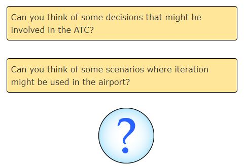
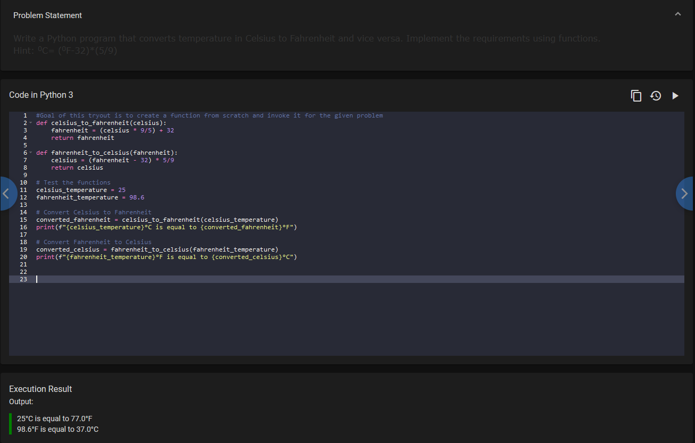
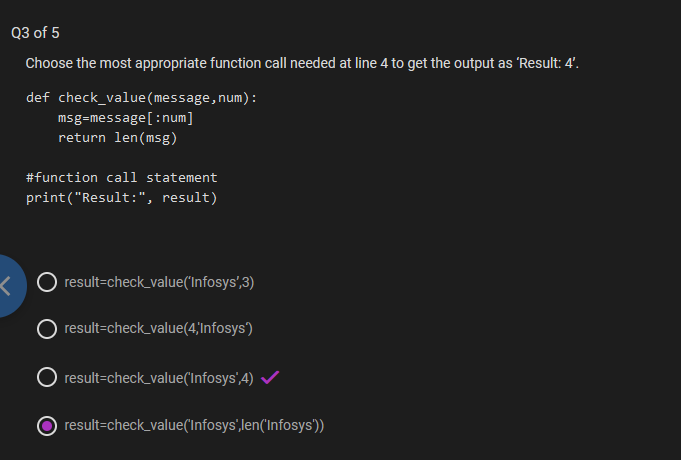
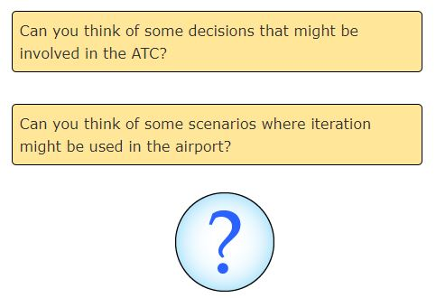
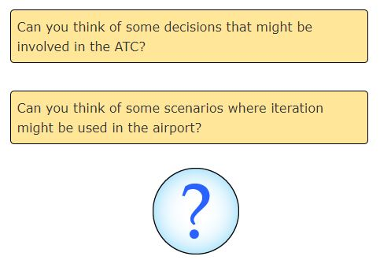

In today's digital world, everyone uses computers and mobile phones. It is essential to know how to use the apps/programs on such digital devices and also the logic behind how they work. Thus, knowing how to program will help you understand and tinker with the world.
The Importance of Programming
In this digital era, the knowledge of programming is essential to bring innovation and change. To create value with your own ideas, you need to know coding. Programming has become basic literacy for the 21st century.
Start your coding journey today!
Why Programming?
In today's digital world, everyone uses computers and mobile phones. It is essential to know how to use the apps/programs on such digital devices and also the logic behind how they work. Thus, knowing how to program will help you understand and tinker with the world.
The Importance of Programming
In this digital era, the knowledge of programming is essential to bring innovation and change. To create value with your own ideas, you need to know coding. Programming has become basic literacy for the 21st century.
Scenario - Takeoff & Landing
Various scenarios are used in an airport to discuss the concepts related to programming. Let us take a look at few of the processes that happen during takeoff and landing.
In the airport, there are many flights landing and taking off. Unlike road traffic, the flights don’t have direct information of other flights around them. The Air Traffic Control (ATC) at the ground gives instructions to each flight on what it should do.
Similarly, instructions are provided to computers to accomplish specific tasks. Such instructions are known as programs, and the act of creating a program is known as programming.
Did you know? WhatsApp, Facebook, YouTube, Gmail are all programs!
Computers are used to solve specific problems. You can write programs to solve some of the problems faced by an ATC. ATC should solve many problems as mentioned below.
The solution to any problem involves the below three aspects:
TLet us take a simple problem of counting the number of flights in the airport. At the start of the day there were 100 flights in the airport. Based on the number of takeoffs and number of landings in a day, how would you figure out the current number of flights in the airport?
Algorithm & its Representation
Algorithm should be represented from the mental thoughts into a form which others can understand. There are primarily two ways of representing an algorithm:
Flow chart: Diagrammatic way of representing the algorithm.
Pseudo-code: Representing the algorithm between a program and normal English.
For example, here is a pseudo-code and a flowchart:
Process is basically a sequence of computations to be performed using some Logic. This is also known as an Algorithm. Different logic gives rise to different algorithms.
Pseudo-code cannot be executed by a computer. It is representation of an algorithm for programmer to understand.
Variables & Operators
Operators
Like assignment operator, there are other operators which can be used to perform various operations.
Arithmetic Operators:
Arithmetic operators are used for performing arithmetic operations:
Operator
Description
+
Addition
-
Subtraction
*
Multiplication
/
Division
%
Modulus
Relational Operators:
Relational operators, also known as comparison operators, are used to compare values. The result of a relational expression is always either true or false:
Operator
Description
==
Equal to
<
Less than
>
Greater than
<=
Less than or equal to
>=
Greater than or equal to
!=
Not equal to
Logical Operators
Logical operators are used to combine one or more relational expressions:
Operator
Description
AND
Result will be true if both the expressions are true. If any one or both the expressions are false, the result will be false.
OR
Result will be true even if one of the expressions is true. If both the expressions are false, the result will be false.
NOT
If the expression is true, the result will be false and vice versa.
If A and B are two relational expressions, say A = (Num1 > 2000), B = (Num2 > 100), the result of combining A and B using logical operators is based on the result of A and B as shown below:
Discuss how to define and use variables, operators in logic building
Exercise on Basics of Pseudo-code - Level 1
Pseudo-code for Converting Days to Seconds
Write a pseudo-code to represent the logic for converting a given number of days into its equivalent number of seconds:
Sample Input for No. of days Expected Output
3 Total number of seconds: 259200
5 Total number of seconds: 432000
Decision Constructs
In a pseudo-code, typically the instructions are performed one by one or line by line. But there may be situations when all the statements in a pseudo-code are not performed. Parts of the pseudo-code which change the flow of instructions or change the flow of control are called as control structures.

Decision Making in Air Traffic Control
ATC takes a lot of decisions as part of its air traffic control operations.
For example, if a flight is approaching the runway, ATC should check if the runway is free. If the runway is not free, then the flight should not land immediately. It should circle in the air and wait for further instructions from the ATC.
Such decision-making process can be conveniently represented in a pseudo-code using an if statement.
Sometimes, ATC may have more than one alternative for a given situation. For example, if the runway is free, the flight can land. But if the flight has less fuel, then it should be allowed an emergency landing. Otherwise, it should circle in the air.
Quiz - Iteration Constructs
Pseudo-code Analysis
The program takes an input value for the variable Counter.
It enters a while loop with the condition Counter < 5.
Inside the loop, it increments Counter by 1 and then displays its value.
The loop continues as long as the condition Counter < 5 is true.
Given that the initial input value provided to Counter is 1, let's see how the loop executes:
Counter is initially set to 1.
In the first iteration of the loop, Counter is incremented by 1, becoming 2, and then displayed.
Since Counter is now 2, the condition Counter < 5 is still true.
In the second iteration, Counter is again incremented by 1, becoming 3, and displayed.
Counter is still less than 5, so the loop continues.
In the third iteration, Counter becomes 4 and is displayed.
After this iteration, Counter is still less than 5, so the loop continues.
In the fourth iteration, Counter becomes 5 and is displayed.
Now, Counter is no longer less than 5, so the loop terminates.
So, the output of the pseudo-code when the input value for Counter is 1 will be:
2
3
4
5
Pseudo-code Loop
In the code, the loop starts by checking if Counter is less than 5. But since the initial value of Counter is 1, which is not less than 5, the loop doesn't even start for this initial value. The loop only starts when Counter becomes 2 because then it's less than 5. That's why the number 1 wasn't displayed.
If you want the number 1 to be displayed as well, you'd need to change the loop condition to check if Counter is less than or equal to 5. That way, the loop will include the initial value of Counter, which is 1.
What is a Programming Language?
Pseudo-code helped us to represent the algorithms and learn a few basics of programming. But to instruct the computer, we need to write a program in a programming language. There are many languages available in which we can write our programs.
Different languages are created for different purposes. This involves trade-offs. For example, a large flight can carry many passengers, but also consumes a lot of fuel. Similarly, different languages have different advantages.
Code Breakdown and Output Prediction
We have two variables: airline which stores the name of the airline, and luggage_weight which stores the weight of the luggage.
We have two airlines: "AirIndia" and "Emirates", each with their respective weight limits (AI_weight_limit and EM_weight_limit).
The code checks the airline using an if-elif-else structure:
If the airline is "AirIndia", it checks if the luggage weight is less than or equal to the weight limit for AirIndia (AI_weight_limit). If it is, it prints "Check-in cleared", otherwise, it prints "Remove some luggage and come back".
If the airline is "Emirates", it does the same check with the weight limit for Emirates (EM_weight_limit).
If the airline is neither "AirIndia" nor "Emirates", it prints "Invalid airline".
Now, let's predict the output:
Since the airline variable is set to "AirIndia", and the luggage_weight is 28, which is less than the weight limit for AirIndia (30), the condition luggage_weight <= AI_weight_limit is true. Therefore, the output will be:
Check-in cleared
This is because the code will enter the first if block and execute the statement print("Check-in cleared").
Code Explanation and Output Prediction
We have two variables: no_of_passengers storing the number of passengers and ticket_number storing the starting ticket number.
The code prints "Ticket Numbers for all the Passengers:" as the initial message.
It enters a while loop that continues as long as no_of_passengers is greater than 0.
Inside the loop, it prints the current ticket number along with a prefix "T -".
It increments the ticket_number by 1 for the next passenger.
It decrements no_of_passengers by 1 to keep track of the number of passengers processed.
Now, let's predict the output:
Since no_of_passengers is initially set to 3, the loop will execute 3 times. It will print the ticket numbers for each passenger, starting from 1001 and incrementing by 1 for each passenger.
So, the output will be:
Ticket Numbers for all the Passengers:
T - 1001
T - 1002
T - 1003
Each line represents a passenger's ticket number.
Data Types in Programming
We know that a program works on data or values. Some examples of values are 1, 1.0, and "Hello".
For a program to use a data, it must be stored in a memory location. The values are stored in binary form in computer memory.
How do we know how many bits are required to represent a value or how much space it needs in memory?
This is determined by the data type of the value and the programming language. For example, number, string, etc. Thus, every value will have a type.
Try Out - Data Types
Problem Statement:
In Python, the data type of a value can be identified by using type(value).
Try out the below program and observe the results:
Languages like Python are dynamically typed whereas C, Go, etc., are statically typed.
Dynamic Typing is a technique in some languages where depending on how a value is used, the data type of the variable is dynamically and automatically assigned. Consider the below code in Python:
num = 65 # Line 1
num = "A" # Line 2
In Line 1, variable num is considered to be of type int and in Line 2, its type is reassigned to String.
Static Typing is used in some languages where the data type has to be declared before a variable is used. Consider the below code in Go:
var num int = 65; // Line 1
num = "A"; // Line 2 (Invalid)
var name string = "A"; // Line 3
Here, Line 1 is a valid statement which declares a variable num of type int. But Line 2 is invalid as we cannot assign a string value to variable num which is already declared to be of type int. Line 3 is a valid statement where name is declared and used as a string.
Any name can be given to a variable however, we cannot use some of the built-in keywords of the language. These keywords are known as reserved words.
Some of the reserved words in Python are:
Python: if, else, for, while, def, print, raise, try, except
Storing Data
If you put a small product in a big box, you may end up wasting space. Similarly, if you put a big product in a small box, you may end up damaging the product.
Just like a product is placed in a box, data occupies memory. Some data need more memory whereas some other data require less memory based on the data type.
In Python language, automatically creates just the right memory needed – neither less nor more.
We have seen that a variable will have a name, value, type and it will occupy memory. Apart from these, it has two more dimensions – scope and lifetime. Thus we can say that any variable will have the following six dimensions.
Operators in Python
As we discussed in pseudo-code, operators help to perform an operation.
Some of the most common operators used in Python are listed below:
Arithmetic Operators
+
-
*
/
%
//
Relational Operators
==
!=
>
<
>=
<=
Assignment Operators
=
+=
-=
*=
/=
%=
Logical Operators
and
or
not
Note: In Python, // indicates integer division.
Example: 11 // 2 = 5
True and False Values in Python
The result of a relational or logical expression is always a boolean (true or false). Apart from the boolean values, other values can also be used to represent a true or false value.
For example, in Python, value zero is considered to be equivalent to false.
The common false values in Python are given below. Any other value is considered to be true.
None
False
0
'' / "" (Empty string - two single quotes/double quotes)
Expression Evaluation in Python
What do you think is the output of 5 + 4 * 9 % (3 + 1) / 6 - 1?
How do you think the result of this expression is computed?
It is done based on the precedence of the operators. Precedence of an operator can be identified based on the rule - BODMAS. Brackets followed by Orders (Powers, Roots), followed by modulo, Division and Multiplication, followed by Addition and Subtraction.
Brackets have the highest precedence followed by orders.
Modulo, Division, and Multiplication have the same precedence. Hence if all appear in an expression, they are evaluated from Left to Right.
Addition and Subtraction have the same precedence. Hence if both appear in an expression, they are evaluated from Left to Right.
Quiz - Operators
Implicit & Explicit Type Conversion
Take a look at the below code:
num = 1 + 1.0
The result is 2.0!
Why do you think the result is 2.0?
Here we were actually expecting the output as 2 but Python automatically converted 1 into a float and added with 1.0. This is known as implicit conversion.
Implicit conversions are dangerous as one may encounter unexpected results.
Take a look at the below code:
num = 1 + int(1.0)
The result will be 2!
If we want the output as 2, then we have to explicitly convert the float 1.0 into integer 1. This is known as explicit conversion. Explicit conversion involves mentioning the data type within brackets explicitly.
Programming languages define their own rule for implicit and explicit conversions and these rules will change from language to language.
Conversion in Python
We noticed that implicit conversions are dangerous as one may encounter unexpected results.
Similarly, one has to be careful in explicit conversions as well. For example:
Converting a floating-point value to an integer would result in the loss of decimal point values.
A larger data type if converted to a smaller data type will result in the loss of data as the number will be truncated.
Conversion to int
int()
Example:
num = int("10")
Value of num will be 10
Conversion to string
str()
Example:
num = str(10)
Value of num will be "10"
Area of a Circle Program
Write a Python program to find and display the area of a circle. Use the formula given for finding the area of a circle:
area = 3.14 * radius * radius
# Directly provide the radius value
radius = 5.0 # Example radius value
# Calculate the area of the circle
area = 3.14 * radius * radius
# Display the area
print("The area of the circle is:", area)
Execution Result
Output:
The area of the circle is: 78.5
Coding Standards
Coding Standards
Though we can give any name to a variable other than reserved words, Google has come up with style guides for most of the programming languages. These style guides help to bring in uniformity and enhance readability of programs written by programmers across the world.
As per Google style guide, variable names in Python should be written as var_name.
The pattern followed in Python is known as snake_case.
Apart from this, it is important to place comments wherever possible to explain code and use meaningful variable names. Comment is an explanation provided in the code which makes it easier to understand for a person who is going through the code.
These are all part of coding standards which is a set of guidelines that can be used to enhance the readability and clarity of the program. It also makes it easier to debug and maintain the program.
Try out - Formatting Output
Escape sequence is a sequence of characters that have special meaning when enclosed in a string. It always begins with a backslash(\).
Try out the below code and observe the output.
print("Let's see some examples.\n\nDid you notice the empty lines?")
print("Do you notice\t the tab space?\nDid you see that I have moved to next line?")
print("Do you want a \" in your text?")
print("Are you going to store more info about escape sequence in Z:\\\\user\\escape_sequence.txt??")
# Every print starts with a new line, end can change that behavior by specifying your own character
print("Did you see I start here", end=" ")
print("and I end in the same line although from a different print?")
print("As observed escape sequences help you to format your output.")
Execution Result
Output:
Let's see some examples.
Did you notice the empty lines?
Do you notice the tab space?
Did you see that I have moved to next line?
Do you want a " in your text?
Are you going to store more info about escape sequence in Z:\\user\escape_sequence.txt??
Did you see I start here and I end in the same line although from a different print?
As observed escape sequences help you to format your output.
Assignment on Selection in Pseudo-code - Level 2
Write a pseudo-code to find the minimum among three given numbers. Assume that the three numbers are always different.
Note: You can use the drag and drop option provided below to create the appropriate pseudo-code from the set of statements provided.
Estimated Time: 20 minutes
Finding the Smallest Number
Imagine you have three different numbers, let's call them A, B, and C. Now, you want to find out which of these numbers is the smallest.
For example, if you have numbers 5, 8, and 3, you would want to know that 3 is the smallest among them.
To do this in a program, you need to write a set of instructions, which we call pseudo-code, to help the computer figure out which number is the smallest among the three.
So, the task is to write down a step-by-step guide (pseudo-code) that tells the computer how to compare these three numbers and determine which one is the smallest.
Finding the Smallest Number
Input Number1, Number2, Number3
if (Number1 < Number2) then
if (Number1 < Number3) then
display "Num1 is the smallest"
else
display "Num3 is the smallest"
else if (Number2 < Number3) then
display "Num2 is the smallest"
else
display "Num3 is the smallest"
Finding the Smallest Number
Let's break it down step by step:
Input the numbers: We start by getting three numbers as input from the user. These numbers are called Number1, Number2, and Number3.
Compare Number1 with Number2:
We first check if Number1 is less than Number2.
If Number1 is indeed less than Number2, we move to the next step. Otherwise, we go to step 5.
Compare Number1 with Number3:
If Number1 is less than Number3, it means Number1 is the smallest among all three numbers.
So, we display "Num1 is the smallest".
If Number1 is not the smallest:
If Number1 is not the smallest, it means Number3 must be the smallest among the three numbers.
So, we display "Num3 is the smallest".
If Number1 is not less than Number2:
If Number1 is not less than Number2, it means Number2 must be smaller or equal to Number1.
So, we compare Number2 with Number3.
Compare Number2 with Number3:
If Number2 is less than Number3, it means Number2 is the smallest among all three numbers.
So, we display "Num2 is the smallest".
If Number2 is not the smallest:
If Number2 is not the smallest, it means Number3 must be the smallest among the three numbers.
So, we display "Num3 is the smallest".
This pseudo-code guides the computer through the process of comparing the three numbers and determining which one is the smallest.
Leap Year Checker
To determine if a given year is a leap year or not, follow these rules:
If the year is divisible by 4 and not divisible by 100, it is a leap year.
If the year is divisible by 400, it is also a leap year.
Otherwise, it is not a leap year.
Leap Year Checker
To determine if a given year is a leap year or not, follow these rules:
Input Year: Get the year as input from the user.
Check if the year is divisible by 4 and not by 100:
If the year satisfies this condition, it means it's a leap year because most years that are divisible by 4 but not by 100 are leap years (except for some special cases).
Check if the year is divisible by 400:
If the year is divisible by 400, it's also a leap year, regardless of whether it's divisible by 4 or 100.
So, if this condition is true, we display "It is a leap year".
If the year doesn't meet the conditions above, display "It is not a leap year".
Assignment on Iteration in Pseudo-code - Level 1
Write a pseudo-code to check whether a given number is a palindrome.
Examples of palindrome: 121, 1331, 2332,78900987,123456654321 etc.
Explanation:
Input Number: We start by getting the number as input from the user.
Initialize Variables: We set up two variables: Temp to store the original number and Reverse to store the reversed number. We also initialize Reverse to 0.
Reverse the Number: Using a loop, we extract each digit from the number (Remainder = Number % 10), add it to the Reverse variable after multiplying it by 10 to shift the digits to the left (Reverse = Reverse * 10 + Remainder), and then remove the last digit from the original number (Number = Number / 10).
Check Palindrome: After the loop, we compare the original number (Temp) with the reversed number (Reverse). If they are equal, we display "Palindrome"; otherwise, we display "Not a Palindrome".
Explanation:
Input Number: We start by asking the user to input a number.
Initialize Variables: We set up two temporary variables: Temp and Reverse.
Temp stores the original number for comparison later.
Reverse will store the digits of the number in reverse order.
Reverse the Number: We use a loop to reverse the digits of the number:
In each iteration of the loop, we take the last digit of the number using the operation Remainder = Number % 10.
We then add this digit to the Reverse variable after shifting the existing digits to the left (Reverse = Reverse * 10 + Remainder).
After adding the last digit to Reverse, we remove that digit from the original number (Number = Number / 10). We continue this process until all digits are reversed.
Check Palindrome: After reversing all digits, we compare the original number (Temp) with the reversed number (Reverse):
If they are equal, it means the number is the same when read forwards and backwards, so we display "Palindrome".
If they are not equal, it means the number is not the same when read forwards and backwards, so we display "Not a Palindrome".
So, in simple terms, this code takes a number, flips it around, and then checks if the flipped number is the same as the original number. If it is, then the original number is a palindrome; if not, it's not a palindrome.
Assignment on Selection & Iteration in Pseudo-code - Level 2
Write a pseudo-code to find the sum of numbers divisible by 4.The pseudo-code must allow the user to accept a number and add it to the sum if it is divisible by 4. It should continue accepting numbers as long as the user wants to provide an input and should display the final sum.
Input Number and Initialize Sum: We start by asking the user to input a number. We also initialize a variable called total_sum to keep track of the sum of numbers divisible by 4.
Check Divisibility by 4: We check if the number provided by the user is divisible by 4. If it is, we add it to the total_sum.
Continue or Stop: After processing each number, we ask the user if they want to input another number. If they do, we repeat the process from step 1. If not, we move to step 4.
Display the Final Sum: Once the user decides to stop providing input, we display the final sum stored in the total_sum.
So, in simpler terms, the program asks the user for numbers, adds them together only if they are divisible by 4, and shows the total sum when the user decides to stop.
Initialize Variables: We start by initializing the Sum variable to 0 and setting Choice to 'Yes' to enter the loop.
Accept Numbers: We use a loop to continuously accept numbers from the user.
Check Divisibility by 4: Inside the loop, we check if the number provided by the user is divisible by 4. If it is, we add it to the Sum.
Continue or Stop: After processing each number, we ask the user if they want to continue by inputting 'Yes' or 'No'. If the user chooses 'Yes', we continue with the loop to input another number. If the user chooses 'No', we exit the loop.
Display Sum: Finally, we display the total sum of numbers divisible by 4 that were provided by the user.
Initialize Variables: We start by setting up two variables: Sum and Choice. Sum will keep track of the total sum of numbers divisible by 4, and Choice will store the user's decision whether to continue or stop.
Accept Numbers and Check Divisibility: We then enter a loop where we continuously ask the user to input a number. After each input, we check if the number is divisible by 4. If it is, we add it to the Sum.
Continue or Stop Loop: After processing each number, we ask the user if they want to continue by entering 'Yes' or 'No'. If the user chooses 'Yes', we continue with the loop to input another number. If the user chooses 'No', we exit the loop.
Display Total Sum: Finally, once the user decides to stop and exits the loop, we display the total sum of all numbers that were divisible by 4.
So, in simpler terms, this code repeatedly asks the user to input numbers and adds them together if they are divisible by 4. It keeps doing this until the user decides to stop, and then it shows the total sum of all such numbers entered
Assignment on Iteration in Pseudo-code - Level 2
A three digit number is said to be an “Armstrong number” if the sum of the third power of its individual digits is equal to the number itself.
Example:
371 is an Armstrong number as 371 = 33 + 73 + 13
407 is an Armstrong number as 407 = 43 + 03 + 73
Write a pseudo-code to check whether a given three-digit number is an Armstrong number.
Explanation of Armstrong Number
What is an Armstrong Number? An Armstrong number is a special kind of number where the sum of each digit raised to the power of the total number of digits equals the original number itself.
Example: For example, take the number 371. It has three digits. Each digit (3, 7, and 1) raised to the power of three (the total number of digits) equals: 33 + 73 + 13 = 27 + 343 + 1 = 371, which is the original number. So, 371 is an Armstrong number.
How to Check for Armstrong Number: To check if a given three-digit number is an Armstrong number, we need to split the number into its individual digits, raise each digit to the power of three, sum them up, and then see if the result equals the original number.
Pseudo-code: So, in pseudo-code, we'll input the number, calculate the sum of cubes of its digits, and compare it with the original number. If they are equal, then the given number is an Armstrong number; if not, it's not an Armstrong number.
Pseudo-code Explanation for Armstrong Number
Input Number: We start by getting the three-digit number from the user and storing it in a variable called Number.
Initialize Variables: We set up two variables: Temp and Sum.
Temp stores the original number for comparison later.
Sum will store the sum of the cubes of the digits.
Calculate Sum of Cubes: We enter a loop that continues until the number becomes 0.
In each iteration of the loop, we extract the last digit of the number using the operation Remainder = Number % 10.
We then calculate the cube of this digit and add it to the Sum: Sum = Sum + Remainder * Remainder * Remainder.
After processing the last digit, we remove it from the original number by dividing Number by 10: Number = Number / 10.
Check for Armstrong Number: After processing all the digits, we compare the sum of cubes (Sum) with the original number (Temp).
If they are equal, we display "This is an Armstrong Number", indicating that the original number meets the criteria for an Armstrong number.
If they are not equal, we display "This is not an Armstrong Number".
So, in simpler terms, this code checks if the sum of the cubes of the digits of a three-digit number is equal to the original number itself. If it is, then the number is an Armstrong number; if not, it's not an Armstrong number.
Assignment on Iteration in Pseudo-code - Level 3
Write a pseudo-code which helps ( O> ) to reach ( E ).
Explanation:
While Loop: We start with a while loop that continues until the starting point is equal to the ending point.
Path Check: Inside the loop, we check if there's a path available ahead. If there is, the character moves forward.
Left Turn Check: If there's no path ahead, we check if there's a left turn available. If yes, the character turns left.
Diffuser Check: If there's neither a path ahead nor a left turn available, we check if a diffuser is found. If so, the character diffuses the bombs, unlocks the lock, and checks if a key is found. If a key is found, the lock is unlocked again.
The loop continues until the character reaches the ending point.
Here's a simpler explanation:
Loop until Destination Reached: We start a loop that keeps running until the character reaches the destination (E).
Check Path Ahead: In each loop iteration, the character checks if there's a clear path ahead. If there is, the character moves forward.
Turn Left if No Path Ahead: If there's no clear path ahead, the character checks if it can turn left. If it can, it does so.
Diffuse Bombs and Unlock Locks: If there's neither a path ahead nor a left turn available, it means there might be bombs to diffuse. The character diffuses the bombs, unlocks any locks it finds, and checks if there's a key. If there's a key, it unlocks the lock again.
Repeat Until Destination Reached: The character keeps looping through these steps until it reaches the destination.
Let's break down the provided pseudo-code step by step:
While Loop: We start by checking if the starting point (O>) is not equal to the ending point (E). If they are not equal, it means the character has not reached the destination yet. So, we enter a loop.
Check Path Ahead: Inside the loop, the character checks if there's a path available ahead. If there is, meaning there are no obstacles blocking the way, the character moves forward.
Left Turn Check: If there's no clear path ahead, the character checks if it's possible to turn left. If turning left is an option, the character makes a left turn.
Diffuser Check: If there's neither a clear path ahead nor a left turn available, it suggests that there might be a bomb to diffuse. So, the character checks if it has found a bomb diffuser. If it has, the character proceeds to diffuse the bombs.
Unlock Locks: After diffusing the bombs, the character checks if there's any lock to unlock. If there is, it unlocks the lock. Additionally, if the character finds a key while diffusing the bombs, it unlocks the lock again.
Loop Continues: After each action, the character checks if it has reached the destination (E). If not, it continues looping through these steps until it reaches the destination.
A function is a block of code that performs a particular task. In Python, functions are declared using the keyword def.
Let's break down the provided code step by step:
Function Definition:
The code defines a function named calculate_sum that takes two parameters: data1 and data2.
Inside the function, it calculates the sum of data1 and data2 and stores the result in a variable called result_sum.
Finally, it returns the value of result_sum back to the caller.
Function Call:
After defining the function, the code calls calculate_sum with the arguments 10 and 20.
This means that data1 will be 10 and data2 will be 20.
Result Printing:
The result returned by the calculate_sum function is stored in a variable named result.
Then, it prints the value of result.
In simple terms, this code defines a function that adds two numbers together and returns the result. It then calls this function with the numbers 10 and 20, calculates their sum, and prints the result, which is 30.
Try out 2 - Basics of Functions
Problem Statement
Write a Python program that converts temperature in Celsius to Fahrenheit and vice versa. Implement the requirements using functions.
Hint: 0C= (0F-32)*(5/9)

#Goal of this tryout is to create a function from scratch and invoke it for the given problem
def celsius_to_fahrenheit(celsius):
fahrenheit = (celsius * 9/5) + 32
return fahrenheit
def fahrenheit_to_celsius(fahrenheit):
celsius = (fahrenheit - 32) * 5/9
return celsius
# Test the functions
celsius_temperature = 25
fahrenheit_temperature = 98.6
# Convert Celsius to Fahrenheit
converted_fahrenheit = celsius_to_fahrenheit(celsius_temperature)
print(f"{celsius_temperature}°C is equal to {converted_fahrenheit}°F")
# Convert Fahrenheit to Celsius
converted_celsius = fahrenheit_to_celsius(fahrenheit_temperature)
print(f"{fahrenheit_temperature}°F is equal to {converted_celsius}°C")
Explanation:
We define two functions celsius_to_fahrenheit and fahrenheit_to_celsius.
The celsius_to_fahrenheit function takes a temperature in Celsius as input and returns the equivalent temperature in Fahrenheit.
The fahrenheit_to_celsius function takes a temperature in Fahrenheit as input and returns the equivalent temperature in Celsius.
We then test these functions by converting a Celsius temperature of 25°C to Fahrenheit and a Fahrenheit temperature of 98.6°F to Celsius.
Finally, we print the results.
Let's break down the code step by step in simple English:
Function Definitions:
We define two functions: celsius_to_fahrenheit and fahrenheit_to_celsius.
The celsius_to_fahrenheit function takes a temperature in Celsius as input and calculates the equivalent temperature in Fahrenheit using the formula (celsius * 9/5) + 32.
The fahrenheit_to_celsius function takes a temperature in Fahrenheit as input and calculates the equivalent temperature in Celsius using the formula (fahrenheit - 32) * 5/9.
Testing the Functions:
We choose a Celsius temperature (25°C) and a Fahrenheit temperature (98.6°F) for testing purposes.
Conversion:
We use the celsius_to_fahrenheit function to convert the Celsius temperature (25°C) to Fahrenheit and store the result in a variable called converted_fahrenheit.
We use the fahrenheit_to_celsius function to convert the Fahrenheit temperature (98.6°F) to Celsius and store the result in a variable called converted_celsius.
Printing the Results:
We print the converted temperatures along with their units to the console. For example, "25°C is equal to [converted_fahrenheit]°F" and "98.6°F is equal to [converted_celsius]°C".
Exercise on Basics of Functions - Level 1
Problem Statement:
The flight ticket rates for a round-trip (Mumbai->Dubai) were as follows:
Rate per Adult: Rs. 37550.0
Rate per Child: 1/3rd of the rate per adult
Service Tax: 7% of the ticket amount (including all passengers)
As it was a holiday season, the airline also offered 10% discount on the final ticket cost (after inclusion of the service tax).
Find and display the total ticket cost for a group which had adults and children.
Test the program with different input values for number of adults and children.
Python Function to Calculate Total Ticket Cost
def calculate_total_ticket_cost(no_of_adults, no_of_children):
# Rate per Adult
rate_per_adult = 37550.0
# Rate per Child (1/3rd of the rate per adult)
rate_per_child = rate_per_adult / 3
# Total ticket cost for adults and children
total_ticket_cost = (no_of_adults * rate_per_adult) + (no_of_children * rate_per_child)
# Service Tax (7% of the total ticket amount)
service_tax = 0.07 * total_ticket_cost
# Final ticket cost after including service tax
final_ticket_cost = total_ticket_cost + service_tax
# Discount (10% of the final ticket cost)
discount = 0.10 * final_ticket_cost
# Total ticket cost after discount
total_ticket_cost_after_discount = final_ticket_cost - discount
return total_ticket_cost_after_discount
# Test the program with different input values for no_of_adults and no_of_children
total_ticket_cost = calculate_total_ticket_cost(5, 2)
print("Total Ticket Cost:", total_ticket_cost)
Explanation:
We define a function calculate_total_ticket_cost that takes the number of adults and children as input.
We calculate the rate per adult and the rate per child based on the given conditions.
We calculate the total ticket cost for adults and children by multiplying the rates with the respective counts.
We calculate the service tax, which is 7% of the total ticket amount.
We calculate the final ticket cost after including the service tax.
We apply a discount of 10% on the final ticket cost.
We calculate the total ticket cost after the discount and return this value.
Breakdown of the Code:
Function Definition: We define a function named calculate_total_ticket_cost that takes two parameters: no_of_adults and no_of_children.
Calculating Rates: We set the rate per adult as Rs. 37550.0. The rate per child is calculated as 1/3rd of the rate per adult.
Calculating Total Ticket Cost: We calculate the total ticket cost for both adults and children by multiplying the respective rates with their counts and summing them up.
Calculating Service Tax: We calculate the service tax, which is 7% of the total ticket cost (including adults and children).
Calculating Final Ticket Cost: We add the service tax to the total ticket cost to get the final ticket cost.
Applying Discount: We apply a discount of 10% on the final ticket cost.
Calculating Total Ticket Cost After Discount: We subtract the discount from the final ticket cost to get the total ticket cost after applying the discount.
Returning Result: We return the total ticket cost after discount from the function.
Testing the Function: We call the calculate_total_ticket_cost function with 5 adults and 2 children as input.
Printing the Result: We print the total ticket cost obtained from the function.
Flow of Execution in Functions
Let's analyze the given code to observe the flow of execution in functions:
Function call: The code calls a function with certain arguments.
Copying Actual arguments to Formal arguments: The arguments passed to the function (actual arguments) are copied to the parameters defined in the function definition (formal arguments).
Execution of function body: Inside the function, the statements within the function body are executed using the values of the formal arguments.
Return from function: After executing the function body, the function returns a value (if specified) to the caller.
Flow of Execution in Functions
Let's break down the flow of execution in functions step by step:
Function Call: The process starts with a function call. In the code, this is where we call the function with certain arguments. For example, calculate_total_ticket_cost(5, 2) is a function call where we're passing 5 adults and 2 children as arguments to the function.
Actual Arguments being Copied to Formal Arguments: When the function is called, the values passed as arguments (in this case, 5 and 2) are copied into the formal parameters of the function (in this case, no_of_adults and no_of_children). These formal parameters act as placeholders for the values that are passed to the function.
Execution of Function Body: Once the values are copied into the formal parameters, the function body is executed. This is where the actual computation takes place. In the code provided, the function calculates the total ticket cost, service tax, applies a discount, and calculates the final ticket cost after discount.
Return from Function: After the function body is executed, the function returns a value. This value can be used in the calling code. In this case, the function returns the total ticket cost after applying the discount.
observe1="What's happening!!"
def passport_check(passport_no):
observe4="actual copied to formal"
observe5="func. execution starts"
if(len(passport_no)==8):
if(passport_no[0]>="A" and passport_no[0]<="Z"):
status="valid"
else:
status="invalid"
else:
status= "invalid"
observe6="func. execution ends"
return status
observe2="function with formal arg."
observe3="calling with actual arg."
passport_status=passport_check("M9993471")
print("Passport is",passport_status)
#observe1,2,3,4,5,6 are temporary variables used to explain this concept
Execution Result
Output:
Passport is valid
Let's go through the code step by step and explain it using the temporary variables observe1, observe2, observe3, observe4, observe5, and observe6:
observe1: This variable holds the string "What's happening!!". It's just a placeholder to help us understand what's happening in the code.
observe2: This variable holds the string "function with formal arg.". It's another placeholder to indicate that we're defining a function with formal parameters.
observe3: This variable holds the string "calling with actual arg.". It's used to indicate that we're calling the function with actual arguments.
observe4: This variable holds the string "actual copied to formal". It's used to indicate that the actual arguments passed to the function are copied into the formal parameters.
observe5: This variable holds the string "func. execution starts". It's used to indicate the start of the execution of the function body.
observe6: This variable holds the string "func. execution ends". It's used to indicate the end of the execution of the function body.
Now, let's break down the code execution using these temporary variables:
We define a function named passport_check that takes one parameter passport_no.
Inside the function:
The variable observe4 is assigned the string "actual copied to formal" to indicate the copying of actual arguments to formal parameters.
The variable observe5 is assigned the string "func. execution starts" to indicate the start of the function execution.
The function checks if the length of the passport number is 8 characters and if the first character is a capital letter.
Depending on the conditions, it sets the status variable to either "valid" or "invalid".
The variable observe6 is assigned the string "func. execution ends" to indicate the end of the function execution.
The function returns the value of the status variable.
Outside the function:
We call the passport_check function with the passport number "M9993471".
The return value from the function is stored in the variable passport_status.
Finally, we print the passport status using the print statement.
In summary, the temporary variables observe1 to observe6 help us understand the flow of the code execution, from defining the function to calling it and executing its body. They act as markers to indicate key points in the code execution process.
Exploring the 'return' Statement in Functions
Here, we'll explore various uses of the return statement in a function:
Returning a Single Value: The function returns a single value calculated inside it.
Returning Multiple Values: The function returns multiple values using a tuple.
Returning Early: The function returns early if a certain condition is met.
#Code1
print("code-1")
def func1(a,b):
return a+b
res=func1(5,10)
print("Value returned:",res)
#Code2:
print("------------------------------------")
print("code-2")
def func2():
print("This code has nothing to return")
return
func2()
#Code3:
print("------------------------------------")
print("code-3")
def func3():
print("This code also has nothing to return and there is no return statement")
func3()
#Code 4:
print("------------------------------------")
print("code-4")
print("------------------------------------")
def func4(a,b):
if(a>b):
print("returns from if block")
return a
print("returns from outside if block")
return b
print("1st invocation of code-4")
print("Value returned:",func4(10,5))
print("------------------------------------")
print("2nd invocation of code-4")
print("Value returned:",func4(2,3))
Execution Result
Output:
code-1
Value returned: 15
------------------------------------
code-2
This code has nothing to return
------------------------------------
code-3
This code also has nothing to return and there is no return statement
------------------------------------
code-4
------------------------------------
1st invocation of code-4
returns from if block
Value returned: 10
------------------------------------
2nd invocation of code-4
returns from outside if block
Value returned: 3
Explanation of Code Snippets
Code 1:
This code defines a function func1 that takes two parameters a and b and returns their sum.
The function is called with arguments 5 and 10, and the returned value is stored in the variable res.
The value returned by the function (sum of 5 and 10) is printed.
Code 2:
This code defines a function func2 that doesn't take any parameters.
Inside the function, it prints a message indicating that the code has nothing to return, but it still includes a return statement with no value.
The function func2 is called, and it prints the message defined inside the function.
However, since there's no explicit return value, the function returns None, which is not printed.
Code 3:
This code defines a function func3 that also doesn't take any parameters.
Inside the function, it prints a message indicating that there is no return statement.
The function func3 is called, and it prints the message defined inside the function.
Similar to Code 2, there's no explicit return value, so the function returns None, which is not printed.
Code 4:
This code defines a function func4 that takes two parameters a and b.
Inside the function, there's a conditional statement that checks if a is greater than b.
If the condition is true, it prints a message and returns the value of a.
If the condition is false, it prints another message and returns the value of b.
Two invocations of the function func4 are made with different arguments, and the returned values are printed.
Problem Statement
Let's see how we can use values returned from a function.
#Code1
print("code-1")
def func6(a,b,c):
res_avg=(a+b+c)/3
return res_avg
print("1st invocation of code-1")
func6(6,8,10)
print("returned value is not assigned to any variable")
print("------------------------------------------------")
print("2nd invocation of code-1")
average=func6(10,15,20)
print("returned value assigned to a variable")
print("value of variable, average:", average)
print("------------------------------------------------")
print("3rd invocation of code-1")
print("returned value is directly printed")
print(func6(1,2,3))
#Code2
print("------------------------------------------------")
print("code-2")
print("------------------------------------------------")
def func7(a,b):
if(a>b):
return True
return False
x=5
y=6
print("1st invocation of code-2")
if(func7(x,y)):
print("inside if block")
else:
print("inside else block")
x=6
y=5
print("------------------------------------------------")
print("2nd invocation of code-2")
if(func7(x,y)):
print("inside if block")
else:
print("inside else block")
Execution Result
Output:
code-1
1st invocation of code-1
returned value is not assigned to any variable
------------------------------------------------
2nd invocation of code-1
returned value assigned to a variable
value of variable, average: 15.0
------------------------------------------------
3rd invocation of code-1
returned value is directly printed
2.0
------------------------------------------------
code-2
------------------------------------------------
1st invocation of code-2
inside else block
------------------------------------------------
2nd invocation of code-2
inside if block
Breakdown of Code Snippets
Code 1:
This code defines a function func6 that takes three parameters a, b, and c.
Inside the function, it calculates the average of the three numbers (a + b + c) / 3 and returns this value.
In the first invocation of func6, the returned value is not assigned to any variable, so it's calculated but not stored or used.
In the second invocation, the returned value is assigned to a variable named average, and this value is printed.
In the third invocation, the returned value is directly printed without assigning it to any variable.
Code 2:
This code defines a function func7 that takes two parameters a and b.
Inside the function, there's a conditional statement that checks if a is greater than b. If it is, the function returns True; otherwise, it returns False.
In the first invocation of func7, x is 5 and y is 6. Since x is not greater than y, the function returns False, and the output "inside else block" is printed.
In the second invocation, x is 6 and y is 5. Since x is greater than y, the function returns True, and the output "inside if block" is printed.

Control Structures in Programming
Control structures are used by programmers to specify the order of execution of statements in a program.
The commonly used control structures in programming include:
Sequence: Statements are executed in a sequential order, one after the other.
Selection: Allows the program to execute different statements based on certain conditions. Examples include if statements, switch statements, etc.
Iteration: Allows the program to execute a block of statements repeatedly until a specified condition is met. Examples include for loops, while loops, etc.
Jump: Allows the program to transfer control to another part of the program. Examples include break, continue, return statements, etc.
Selection Control Structures - Airport Check-in Process
Below is the Python program representing the check-in process:
In this Python program, there's a function check_luggage_weight that takes the luggage weight as input. If the luggage weight is less than or equal to 20, it prints "Luggage weight is within limit". Otherwise, it calculates the extra luggage weight and prints "Extra luggage weight is" followed by the weight of the extra luggage.
Then, the program calls this function with different luggage weights - 15, 25, and 30.
Let's go through it step by step:
For the first call with luggage weight 15, it's within the limit, so "Luggage weight is within limit" is printed.
For the second call with luggage weight 25, it's over the limit by 5 units, so "Extra luggage weight is 5" is printed.
For the third call with luggage weight 30, it's over the limit by 10 units, so "Extra luggage weight is 10" is printed.
ticket_status="Confirmed"
luggage_weight=32
weight_limit=30 #Weight limit for the airline
extra_luggage_charge=0
if(ticket_status=="Confirmed"):
if(luggage_weight>0 and luggage_weight<=weight_limit):
print("Check-in cleared")
elif(luggage_weight<=(weight_limit+10)):
extra_luggage_charge=300*(luggage_weight-weight_limit)
else:
extra_luggage_charge=500*(luggage_weight-weight_limit)
if(extra_luggage_charge>0):
print("Extra luggage charge is Rs.", extra_luggage_charge)
print("Please make the payment to clear check-in")
else:
print("Sorry, ticket is not confirmed")
Now, let's analyze the code and guess the output:
The ticket_status is set to "Confirmed".
The luggage_weight is set to 32, and the weight_limit is set to 30.
Based on the conditions in the code:
Since the ticket_status is "Confirmed", the code proceeds to check the luggage weight.
The luggage weight exceeds the weight limit, so the passenger needs to pay an extra luggage charge.
The extra luggage charge is calculated based on the excess weight. Since the excess weight is 2 kg, which is within the range of 0-10 kg, the charge is calculated as Rs. 300 per kg.
The calculated extra luggage charge is Rs. 600 (2 kg * Rs. 300/kg).
The program prints "Extra luggage charge is Rs. 600" and "Please make the payment to clear check-in".
Breakdown of Airport Check-in Process Code
Let's break down the code step by step:
We have a variable ticket_status which indicates whether the ticket is confirmed or not. It's set to "Confirmed".
We have another variable luggage_weight which stores the weight of the luggage. It's set to 32.
weight_limit is the weight limit for the airline, set to 30.
extra_luggage_charge is initially set to 0.
We start with a conditional check to see if the ticket status is "Confirmed".
Inside the first if block, we check if the luggage weight is within the allowed limit (greater than 0 and less than or equal to weight_limit). If it is, we print "Check-in cleared".
If the luggage weight exceeds the weight limit but is within 10 units over the limit, we calculate the extra luggage charge as 300 times the excess weight.
If the luggage weight exceeds the weight limit by more than 10 units, we calculate the extra luggage charge as 500 times the excess weight.
If there's any extra luggage charge calculated (i.e., extra_luggage_charge > 0), we print the extra luggage charge along with a message to make the payment to clear check-in.
If the ticket status is not "Confirmed", we print "Sorry, ticket is not confirmed".
So, if the ticket is confirmed and the luggage weight exceeds the limit, the code calculates and prints the extra luggage charge. Otherwise, it prints "Check-in cleared". If the ticket is not confirmed, it prints "Sorry, ticket is not confirmed".
Exploring Check-in Process: Passport Status
One of the first steps during the check-in process is checking the passport status. Consider the below program written for that:
The conditional statement used in this program is known as an if-else statement.
Exploring Check-in Process: Luggage Weight
The next step in the check-in process is checking the luggage weight. Consider the below program written for that:
luggage_weight = 30
weight_limit = 30 # Weight limit for the airline
extra_luggage_charge = 0
if(luggage_weight > 0 and luggage_weight <= weight_limit):
print("Check-in cleared")
elif(luggage_weight <= (weight_limit + 10)):
extra_luggage_charge = 300 * (luggage_weight - weight_limit)
else:
extra_luggage_charge = 500 * (luggage_weight - weight_limit)
if(extra_luggage_charge > 0):
print("Extra luggage charge is Rs.", extra_luggage_charge)
print("Please make the payment to clear check-in")
The conditional statement in this program is known as the else if ladder. The conditions are evaluated from the top of the ladder downwards. As soon as a true condition is encountered, the statement associated with it is executed. The remaining condition checks in the ladder will be skipped.
Check-in Process: Luggage Weight
During the check-in process, the luggage weight is checked against the weight limit for the airline. Here's the Python code for this process:
luggage_weight = 30
weight_limit = 30 # Weight limit for the airline
extra_luggage_charge = 0
if(luggage_weight > 0 and luggage_weight <= weight_limit):
print("Check-in cleared")
elif(luggage_weight <= (weight_limit + 10)):
extra_luggage_charge = 300 * (luggage_weight - weight_limit)
else:
extra_luggage_charge = 500 * (luggage_weight - weight_limit)
if(extra_luggage_charge > 0):
print("Extra luggage charge is Rs.", extra_luggage_charge)
print("Please make the payment to clear check-in")
This code checks the luggage weight against the weight limit. If the weight is within the limit, the check-in is cleared. If the weight exceeds the limit but is within 10 units over the limit, an extra luggage charge of Rs. 300 per unit is applied. If the weight exceeds the limit by more than 10 units, an extra luggage charge of Rs. 500 per unit is applied.
Check-in Process: Airlines
Considering the check-in process for various airlines, the code is structured to optimize execution time by ordering conditions based on the frequency of occurrence of airlines:
Code 1:
airline = "AirIndia"
if(airline == "AirIndia"):
print("Proceed to Air India check-in counter")
elif(airline == "Emirates"):
print("Proceed to Emirates check-in counter")
elif(airline == "British Airways"):
print("Proceed to British Airways check-in counter")
else:
print("Invalid airline")
This code prioritizes Air India as it's the most commonly used airline, followed by Emirates and British Airways. This ordering minimizes the number of comparisons needed, optimizing execution time.
Check-in Process: Ticket Validation and Luggage Check-in
In the check-in process, ticket validation occurs first, followed by luggage check-in. The code below demonstrates this process using nested if statements:
ticket_status="Confirmed"
luggage_weight=32
weight_limit=30 #Weight limit for the airline
extra_luggage_charge=0
if(ticket_status=="Confirmed"):
if(luggage_weight>0 and luggage_weight<=weight_limit):
print("Check-in cleared")
elif(luggage_weight<=(weight_limit+10)):
extra_luggage_charge=300*(luggage_weight-weight_limit)
else:
extra_luggage_charge=500*(luggage_weight-weight_limit)
if(extra_luggage_charge>0):
print("Extra luggage charge is Rs.", extra_luggage_charge)
print("Please make the payment to clear check-in")
else:
print("Sorry, ticket is not confirmed")
This code demonstrates the use of nested if statements where ticket validation is nested within luggage check-in. Depending on the ticket status, appropriate actions are taken to clear the check-in process.
Try out - Selection Control Structures
Problem Statement:
Try out and observe the result.
Modify the code to make the following changes:
Change the luggage_weight to 42, execute and observe the result.
Change the luggage_weight to 30, execute and observe the result.
For any extra luggage, passenger has to pay Rs. 500 per extra kg. Make the necessary change in the code, execute and observe the result.
Try out - Selection Control Structures
Let's break down the problem statement step by step:
Change the luggage_weight to 42: Modify the value of the luggage_weight variable to 42, then execute the code and observe the result. This change will test the scenario where the luggage weight exceeds the weight limit, triggering the calculation of the extra luggage charge.
Change the luggage_weight to 30: Modify the value of the luggage_weight variable to 30, then execute the code and observe the result. This change will test the scenario where the luggage weight is exactly at the weight limit.
For any extra luggage, passenger has to pay Rs. 500 per extra kg: Modify the code to calculate the extra luggage charge at a rate of Rs. 500 per extra kilogram instead of Rs. 300 as in the original code. Then, execute the modified code and observe the result. This change will test the scenario where the extra luggage charge calculation is updated.
ticket_status="Confirmed"
luggage_weight=32
weight_limit=30 #Weight limit for the airline
extra_luggage_charge=0
if(ticket_status=="Confirmed"):
if(luggage_weight>0 and luggage_weight<=weight_limit):
print("Check-in cleared")
elif(luggage_weight<=(weight_limit+10)):
extra_luggage_charge=300*(luggage_weight-weight_limit)
else:
extra_luggage_charge=500*(luggage_weight-weight_limit)
if(extra_luggage_charge>0):
print("Extra luggage charge is Rs.", extra_luggage_charge)
print("Please make the payment to clear check-in")
else:
print("Sorry, ticket is not confirmed")
Execution Result
Output:
Extra luggage charge is Rs. 600
Please make the payment to clear check-in
Breakdown of the Code
ticket_status="Confirmed": Initializes the variable ticket_status with the value "Confirmed".
luggage_weight=32: Initializes the variable luggage_weight with the value 32.
weight_limit=30: Initializes the variable weight_limit with the value 30, representing the weight limit for the airline.
extra_luggage_charge=0: Initializes the variable extra_luggage_charge with the value 0.
if(ticket_status=="Confirmed"):: Checks if the ticket status is "Confirmed". If true, executes the code block inside the if statement.
if(luggage_weight>0 and luggage_weight<=weight_limit):: Checks if the luggage weight is within the allowed limit. If true, prints "Check-in cleared".
elif(luggage_weight<=(weight_limit+10)):: Checks if the luggage weight is within 10 kilograms above the limit. If true, calculates the extra luggage charge at a rate of Rs. 300 per extra kilogram.
else:: If none of the previous conditions are met, calculates the extra luggage charge at a rate of Rs. 500 per extra kilogram.
if(extra_luggage_charge>0):: Checks if there is any extra luggage charge calculated. If true, prints the extra luggage charge amount and a request to make the payment.
else:: If no extra luggage charge is calculated, it means the luggage weight is within the allowed limit, and "Check-in cleared" has already been printed.
print("Sorry, ticket is not confirmed"): Prints a message indicating that the ticket is not confirmed if the ticket status is not "Confirmed".
Nested Selection Control Structure
Problem Statement
Try out the below code and make the necessary corrections to get the output as follows:
Airport security cleared
Extra luggage charge is Rs. 600
Please make the payment to clear check-in
passport_status="valid"
ticket_status="Confirmed"
luggage_weight=32
weight_limit=30 #Weight limit for the airline
extra_luggage_charge=0
if(passport_status=="valid"):
print("Airport security cleared")
if(ticket_status=="Confirmed"):
if(luggage_weight>0 and luggage_weight<=weight_limit):
print("Check-in cleared")
elif(luggage_weight<=(weight_limit+10)):
extra_luggage_charge=300*(luggage_weight-weight_limit)
else:
extra_luggage_charge=500*(luggage_weight-weight_limit)
if(extra_luggage_charge>0):
print("Extra luggage charge is Rs.", extra_luggage_charge)
print("Please make the payment to clear check-in")
else:
print("Sorry, ticket is not confirmed")
else:
print("Invalid passport")
Execution Result
Output:
Airport security cleared
Let's break down the problem statement:
The provided code likely includes an if-else statement that checks whether the airport security has cleared and calculates the extra luggage charge if applicable. However, there seems to be an issue with the code as the expected output is not being generated.
To fix the issue and get the desired output, you need to identify and correct any errors or logical flaws in the code. This may involve adjusting the conditions within the if-else statement or making changes to how the extra luggage charge is calculated.
Once the necessary corrections are made, the code should produce the expected output, which includes a message indicating that the airport security has been cleared and another message specifying the extra luggage charge along with a request to make the payment to clear the check-in.
Let's break down the provided code step by step:
passport_status="valid": This line initializes the variable passport_status with the value "valid", indicating that the passport status is valid.
ticket_status="Confirmed": This line initializes the variable ticket_status with the value "Confirmed", indicating that the ticket status is confirmed.
luggage_weight=32: This line initializes the variable luggage_weight with the value 32, representing the weight of the luggage.
weight_limit=30: This line initializes the variable weight_limit with the value 30, which represents the weight limit for the airline.
extra_luggage_charge=0: This line initializes the variable extra_luggage_charge with the value 0, which will store the extra luggage charge if applicable.
if(passport_status=="valid"):
Checks if the passport status is valid.
If it is valid, proceeds to the next step; otherwise, prints "Invalid passport".
print("Airport security cleared"): Prints "Airport security cleared" to indicate that the airport security check has been cleared.
Nested if statement:
if(ticket_status=="Confirmed"):
Checks if the ticket status is confirmed.
If confirmed, proceeds to luggage weight check; otherwise, proceeds to the else block.
Nested if-else statement:
if(luggage_weight>0 and luggage_weight<=weight_limit):
Checks if the luggage weight is within the allowed limit.
If within the limit, prints "Check-in cleared".
If not within the limit, proceeds to calculate the extra luggage charge.
Nested else block:
else:
Calculates the extra luggage charge based on the weight exceeding the limit.
Checks if the extra luggage charge is greater than 0.
If so, prints the extra luggage charge and a request to make the payment to clear check-in.
If not, prints "Sorry, ticket is not confirmed".
This code ensures that the airport security is cleared, validates the passport and ticket status, checks the luggage weight, and calculates the extra luggage charge if applicable. It provides appropriate messages based on the conditions met.
Exercise on Selection with Turtle - Level 1
Write a program to take the turtle to its destination - north, south, east or west based on the destination it wants to reach. Refer the output screens provided for each destination.
import turtle
# Create a screen
wn = turtle.Screen()
wn.setup(540, 508)
# Create a turtle named alex
alex = turtle.Turtle()
alex.shape("turtle")
alex.color("blue")
# Function to move the turtle to the specified destination
def move_turtle(destination):
if destination == "north":
alex.setheading(90)
alex.forward(100)
elif destination == "south":
alex.setheading(270)
alex.forward(100)
elif destination == "east":
alex.setheading(0)
alex.forward(100)
elif destination == "west":
alex.setheading(180)
alex.forward(100)
else:
print("Invalid destination")
# Test the function with different destinations
move_turtle("south")
turtle.done() # Keeps the window open until closed manually
Exercise on Selection in Python - Level 1
Number Message Display
For a given number:
If it is a multiple of three, display "Zip".
If it is a multiple of five, display "Zap".
If it is a multiple of both three and five, display "Zoom".
If it does not satisfy any of the above given conditions, display "Invalid".
def display(num):
message = ""
if num % 3 == 0 and num % 5 == 0:
message = "Zoom"
elif num % 3 == 0:
message = "Zip"
elif num % 5 == 0:
message = "Zap"
else:
message = "Invalid"
return message
# Provide different values for num and test your program
message = display(9)
print(message) # Output: Zip
Product of Values
Write a python program to find and display the product of three positive integer values based on the rule mentioned below:
It should display the product of the three values except when one of the integer values is 7.
In that case, 7 should not be included in the product and the values to its left also should not be included.
If there is only one value to be considered, display that value itself.
If no values can be included in the product, display -1.
Note: Assume that if 7 is one of the positive integer values, then it will occur only once. Refer to the sample I/O given below:
# Create a list of the numbers
nums = [num1, num2, num3]
# Check if 7 is in the list and find its position
if 7 in nums:
index = nums.index(7) + 1
# Slice the list to start from the number after 7
nums = nums[index:]
# If the list is empty, return -1
if not nums:
return -1
# Calculate the product of the remaining numbers
product = 1
for num in nums:
product *= num
return product
# Test cases
print(find_product(1, 5, 3)) # Expected output: 15
print(find_product(3, 7, 8)) # Expected output: 8
print(find_product(7, 4, 3)) # Expected output: 12
print(find_product(1, 5, 7)) # Expected output: -1
Problem Breakdown
Objective:
Write a Python program to calculate and display the product of three given positive integers.
Special Rule:
If one of the given integers is 7:
Do not include 7 in the product.
Also, do not include any integers that appear to the left of 7.
Handling Different Cases:
If only one integer remains to be considered for the product, display that integer.
If no integers can be included in the product (i.e., if 7 is the first integer or the only integers are to the left of 7), display -1.
Product of Values
Step-by-Step Code Breakdown
Function Definition
Function Signature:
def find_product(num1, num2, num3):
This line defines a function named find_product that takes three parameters: num1, num2, and num3.
Step 1: Create a List of Numbers
Creating a List:
nums = [num1, num2, num3]
This line creates a list called nums containing the three input numbers.
Step 2: Check for 7 and Slice the List
Checking for 7:
if 7 in nums:
index = nums.index(7) + 1
nums = nums[index:]
if 7 in nums: This line checks if the number 7 is in the list nums. index = nums.index(7) + 1: If 7 is found, it finds the index of 7 in the list and adds 1 to it, which gives the position of the element right after 7. nums = nums[index:]: This line slices the list to start from the position right after 7, effectively removing 7 and all elements to its left from the list.
Step 3: Handle the Case Where No Numbers Remain
Check for Empty List:
if not nums:
return -1
if not nums: This line checks if the list nums is empty (i.e., there are no numbers left in the list). return -1: If the list is empty, the function returns -1 because there are no numbers to multiply.
Step 4: Calculate the Product
Calculate the Product:
product = 1
for num in nums:
product *= num
product = 1: Initializes a variable product to 1. for num in nums: This line starts a loop that iterates over each number in the list nums. product *= num: For each number in the list, it multiplies product by that number.
Step 5: Return the Result
Return the Product:
return product
This line returns the final product of the numbers left in the list after processing.
These lines test the function with different inputs and print the results: find_product(1, 5, 3): No 7, so the product is 1 * 5 * 3 = 15. find_product(3, 7, 8): 7 is present, so only 8 is considered. Output is 8. find_product(7, 4, 3): 7 is present, so only 4 and 3 are considered. Output is 4 * 3 = 12. find_product(1, 5, 7): 7 is present, no numbers left after 7. Output is -1.
This code handles the specific rule about excluding 7 and numbers to its left, calculates the product of the remaining numbers, and returns the appropriate result based on the conditions given.
Triangle Check
Write a Python function to check whether three given numbers can form the sides of a triangle.
Hint: Three numbers can be the sides of a triangle if none of the numbers are greater than or equal to the sum of the other two numbers.
Problem Explanation
You're asked to write a Python function that checks whether three given numbers can form the sides of a triangle.
Conditions for a Triangle:
Triangle Inequality Theorem:
None of the three numbers should be greater than or equal to the sum of the other two numbers.
Function Objective
Your function needs to determine if the given three numbers satisfy this condition, indicating whether they can form a triangle.
Example
For example, if you have three numbers: 3, 4, and 5:
3 is less than the sum of 4 and 5 (3 < 4 + 5), so it can be a side of a triangle.
Similarly, 4 is less than the sum of 3 and 5 (4 < 3 + 5), and 5 is less than the sum of 3 and 4 (5 < 3 + 4).
So, the numbers 3, 4, and 5 can form the sides of a triangle.
Function Implementation
Your Python function should take three numbers as input and return either True if they can form a triangle or False if they cannot.
Constraints
You may assume that the input consists of three positive integers.
Explanation of the Code
def form_triangle(num1, num2, num3):
# Do not change the messages provided below
success = "Triangle can be formed"
failure = "Triangle can't be formed"
# Check if the sum of any two sides is greater than the third side
if num1 + num2 > num3 and num1 + num3 > num2 and num2 + num3 > num1:
return success
else:
return failure
# Provide different values for the variables, num1, num2, num3 and test your program
num1 = 3
num2 = 4
num3 = 5
print(form_triangle(num1, num2, num3))
Explanation:
Function Definition: The code defines a function named form_triangle that takes three parameters: num1, num2, and num3.
Message Definitions: It defines two messages: success for when a triangle can be formed and failure for when it can't.
Triangle Formation Check: It checks whether the sum of any two sides of the triangle is greater than the third side. If this condition is true for all combinations of sides, it means a triangle can be formed.
Return Statements: It returns the appropriate message based on the result of the triangle formation check. If the condition is true, it returns the success message; otherwise, it returns the failure message.
Function Invocation: Finally, it calls the form_triangle function with the values of num1, num2, and num3 as arguments and prints the result of the function call.
Problem Statement
You have x no. of 5 rupee coins and y no. of 1 rupee coins.
You want to purchase an item for amount z.
The shopkeeper wants you to provide exact change.
You want to pay using the minimum number of coins.
How many 5 rupee coins and 1 rupee coins will you use?
If exact change is not possible, then display -1.
Problem Statement
You have a certain number of 5 rupee coins ('x') and a certain number of 1 rupee coins ('y').
You're looking to purchase an item that costs 'z' rupees.
The shopkeeper requires you to provide the exact amount for the purchase.
Your goal is to use the minimum number of coins for payment.
Determine the optimal combination of 5 rupee coins and 1 rupee coins to pay for the item.
If it's impossible to provide exact change with the available coins, display -1.
def make_amount(rupees_to_make, no_of_five, no_of_one):
five_needed = 0
one_needed = 0
# Calculate the maximum number of 5 rupee coins that can be used
five_needed = min(rupees_to_make // 5, no_of_five)
# Calculate the remaining amount after using the 5 rupee coins
remaining_amount = rupees_to_make - (five_needed * 5)
# Calculate the number of 1 rupee coins needed
if remaining_amount <= no_of_one:
one_needed = remaining_amount
else:
# If the remaining amount cannot be covered by the 1 rupee coins, return -1
print(-1)
return
# Print the result
print("No. of Five needed :", five_needed)
print("No. of One needed :", one_needed)
# Test the function with sample inputs
make_amount(21, 4, 5) # Output should be 4 five rupee coins and 1 one rupee coin
make_amount(11, 2, 11) # Output should be 2 five rupee coins and 1 one rupee coin
make_amount(19, 3, 3) # Output should be -1 as it's not possible
Step-by-Step Explanation of the Code:
Function Definition: The function make_amount takes three arguments:
rupees_to_make: The total amount of rupees you want to make/change.
no_of_five: The number of 5 rupee coins you have.
no_of_one: The number of 1 rupee coins you have.
Variable Initialization: Two variables, five_needed and one_needed, are initialized to 0. These variables will store the number of 5 rupee coins and 1 rupee coins needed, respectively.
Calculate 5 Rupee Coins Needed: The code calculates the maximum number of 5 rupee coins that can be used to make the given amount. It divides the rupees_to_make by 5 (integer division) and takes the minimum of this result and the number of 5 rupee coins available (no_of_five). This ensures that you don't use more 5 rupee coins than you have.
Calculate Remaining Amount: After using the 5 rupee coins, the code calculates the remaining amount of rupees that need to be covered with 1 rupee coins.
Calculate 1 Rupee Coins Needed: If the remaining amount can be covered with the available 1 rupee coins (remaining_amount <= no_of_one), it calculates the number of 1 rupee coins needed (one_needed). If not, it prints -1 and returns from the function because it's not possible to make the required amount with the available coins.
Print the Result: Finally, it prints the number of 5 rupee coins and 1 rupee coins needed to make the desired amount.
Detailed Explanation of Specific Line of Code:
This line of code calculates the maximum number of 5 rupee coins that can be used to make the desired amount. Let's break it down:
rupees_to_make // 5: This part of the code divides the total amount of rupees (rupees_to_make) by 5 using integer division (//). Integer division returns the quotient without any remainder. So, this calculation gives us the maximum number of 5 rupee coins that can be used without exceeding the total amount.
no_of_five: This is the actual number of 5 rupee coins you have.
min(...): The min() function is used here to find the minimum of the two values calculated above. This ensures that you don't use more 5 rupee coins than you have. Even if the calculation rupees_to_make // 5 gives a result larger than the number of 5 rupee coins you have (no_of_five), min(...) ensures that you only use as many 5 rupee coins as you actually possess.
In summary, five_needed stores the maximum number of 5 rupee coins that can be used to make the desired amount, considering both the amount needed and the number of 5 rupee coins available. This ensures that you use the available coins optimally without exceeding your resources.
Detailed Explanation of Remaining Amount Calculation:
The remaining_amount variable tells you how much more money you need to make up using the 1 rupee coins after you have used as many 5 rupee coins as possible.
In summary, this line subtracts the total value of the 5 rupee coins used from the total amount you need to make, giving you the amount that still needs to be made up with 1 rupee coins.
Here’s a step-by-step explanation with the given example:
You need to make 21 rupees.
You can use up to 4 five rupee coins (since 21 divided by 5 is 4.2, and you can only use whole coins).
The total value of the 4 five rupee coins is 4 × 5 = 20 rupees.
Subtract this from the total amount needed: 21 - 20 = 1.
So, you still need 1 rupee, which can be made up with a 1 rupee coin.
This calculation ensures you know exactly how much more is needed after using the larger denomination coins.
Step-by-Step Explanation
Purpose of This Block: This block of code calculates how many 1 rupee coins are needed to make up the remaining amount after using as many 5 rupee coins as possible. It also checks if you have enough 1 rupee coins to cover the remaining amount.
Variables:
remaining_amount: The amount of money still needed after using the 5 rupee coins.
no_of_one: The number of 1 rupee coins available.
one_needed: The number of 1 rupee coins required to make the remaining amount.
Explanation of Each Line:
if remaining_amount <= no_of_one:
What it does: This line checks if the remaining amount you need (after using the 5 rupee coins) is less than or equal to the number of 1 rupee coins you have.
Why it's important: This check ensures that you have enough 1 rupee coins to make up the remaining amount. If you don't have enough 1 rupee coins, you won't be able to provide the exact change.
one_needed = remaining_amount
What it does: If the condition in the previous line is true (i.e., you have enough 1 rupee coins), this line sets the number of 1 rupee coins needed to the remaining amount.
Why it's important: This line assigns the exact number of 1 rupee coins needed to make up the remaining amount to the variable one_needed.
else: print(-1) return
What it does: If the condition in the first line is not true (i.e., you don't have enough 1 rupee coins), this block of code executes.
Why it's important: This part of the code handles the scenario where you can't provide the exact change because you don't have enough 1 rupee coins.
What happens: It prints -1 to indicate that providing the exact change is not possible, and then return is used to exit the function early.
Example with Detailed Steps
Let's walk through an example using the function call make_amount(21, 4, 5):
Initial Inputs:
rupees_to_make: 21
no_of_five: 4
no_of_one: 5
Calculating five_needed:
Maximum 5 rupee coins that can be used: min(21 // 5, 4) = 4
five_needed is 4.
Calculating remaining_amount:
Remaining amount after using 4 five rupee coins: 21 - (4 * 5) = 1
remaining_amount is 1.
Checking if 1 rupee coins can cover the remaining amount:
if remaining_amount <= no_of_one:
remaining_amount (1) is less than or equal to no_of_one (5), so the condition is true.
Calculating one_needed:
one_needed = remaining_amount
one_needed is set to remaining_amount, which is 1.
Final Result:
five_needed is 4.
one_needed is 1.
The function will print:
No. of Five needed : 4
No. of One needed : 1
If, for example, the function call was make_amount(21, 4, 0):
Initial Inputs:
rupees_to_make: 21
no_of_five: 4
no_of_one: 0
Calculating five_needed:
five_needed is 4.
Calculating remaining_amount:
remaining_amount is 1.
Checking if 1 rupee coins can cover the remaining amount:
if remaining_amount <= no_of_one:
remaining_amount (1) is greater than no_of_one (0), so the condition is false.
Not enough 1 rupee coins:
else:
print(-1)
return
The function will print -1 and exit because it cannot provide the exact change with the available coins.
By following these steps, you ensure that you either get the minimum number of coins needed to make the exact amount or determine that it's not possible to make the exact amount with the given coins.
FoodCorner Delivery Bill Calculation
FoodCorner offers home delivery of vegetarian and non-vegetarian combos to its customers. The cost per plate for a vegetarian combo is Rs. 120, and for a non-vegetarian combo, it's Rs. 150.
Customers are also charged for home delivery based on the distance in kilometers from the restaurant to the delivery point. The delivery charges are as follows:
For the first 3 kilometers: Rs. 0 per kilometer
For the next 3 kilometers (up to 6 kilometers): Rs. 3 per kilometer
For distances beyond 6 kilometers: Rs. 6 per kilometer
The following information must be used to check the validity of the data provided by the customer:
Type of food must be 'V' for vegetarian and 'N' for non-vegetarian.
Distance in kilometers must be greater than 0.
Quantity ordered should be minimum 1.
If any of the input is invalid, the bill amount should be considered as -1.
Problem Explanation in Simple English
You need to write a Python program for a food delivery service that calculates the final bill amount a customer needs to pay based on the type of food ordered, the quantity of food, and the distance for delivery. Here's how it works:
Types of Food:
Vegetarian combo (type 'V'): Costs Rs.120 per plate.
Non-vegetarian combo (type 'N'): Costs Rs.150 per plate.
Delivery Charges Based on Distance:
The first 3 kilometers: Free delivery.
From 4 to 6 kilometers: Rs.3 per kilometer.
Beyond 6 kilometers: Rs.6 per kilometer.
Conditions for Valid Input:
Type of food must be either 'V' (vegetarian) or 'N' (non-vegetarian).
Distance must be greater than 0 kilometers.
Quantity of food must be at least 1 plate.
Output:
If any input is invalid, the program should return -1.
Otherwise, the program should calculate and return the total bill amount.
Detailed Steps
Input Validation:
Check if the food type is valid ('V' or 'N').
Check if the distance is greater than 0.
Check if the quantity is at least 1.
Calculate the Food Cost: Multiply the number of plates by the cost per plate (Rs.120 for 'V' and Rs.150 for 'N').
Calculate the Delivery Charges:
First 3 kilometers are free.
For distance between 4 to 6 kilometers, charge Rs.3 per kilometer.
For distance beyond 6 kilometers, charge Rs.6 per kilometer.
Calculate the Total Bill: Add the food cost and the delivery charges.
Return the Total Bill or -1 for invalid inputs.
Example
Let's say a customer orders 2 non-vegetarian combos and the distance is 7 kilometers:
Food type: 'N'
Quantity: 2
Distance: 7 kilometers
Calculation:
Food cost: 2 plates * Rs.150 = Rs.300
Delivery charge:
First 3 km: Rs.0
Next 3 km (4th to 6th km): 3 km * Rs.3 = Rs.9
Remaining 1 km (7th km): 1 km * Rs.6 = Rs.6
Total delivery charge: Rs.0 + Rs.9 + Rs.6 = Rs.15
Total bill: Rs.300 (food) + Rs.15 (delivery) = Rs.315
def calculate_bill_amount(food_type, quantity_ordered, distance_in_kms):
# Validate inputs
if food_type not in ['V', 'N'] or quantity_ordered < 1 or distance_in_kms <= 0:
return -1
# Calculate food cost
if food_type == 'V':
food_cost_per_plate = 120
else:
food_cost_per_plate = 150
food_cost = food_cost_per_plate * quantity_ordered
# Calculate delivery charge
if distance_in_kms <= 3:
delivery_charge = 0
elif distance_in_kms <= 6:
delivery_charge = (distance_in_kms - 3) * 3
else:
delivery_charge = (6 - 3) * 3 + (distance_in_kms - 6) * 6
# Calculate total bill amount
bill_amount = food_cost + delivery_charge
return bill_amount
# Test the function with sample inputs
bill_amount = calculate_bill_amount("N", 2, 7)
print(bill_amount) # Expected output: 318
Food Delivery Bill Calculation
Input Part
The input part involves receiving three parameters:
food_type: The type of food ('V' for vegetarian or 'N' for non-vegetarian).
quantity_ordered: The number of plates ordered.
distance_in_kms: The distance from the restaurant to the delivery point in kilometers.
These inputs are passed to the function calculate_bill_amount.
Process Part
The process part involves several steps:
Validation of Inputs:
if food_type not in ['V', 'N'] or quantity_ordered < 1 or distance_in_kms <= 0:
return -1
This step checks if the inputs are valid:
The food_type must be either 'V' or 'N'.
The quantity_ordered must be at least 1.
The distance_in_kms must be greater than 0.
If any of these conditions are not met, the function returns -1, indicating invalid input.
This step calculates the delivery charge based on the distance:
For the first 3 kilometers, the delivery is free (Rs.0).
For the next 3 kilometers (4 to 6 km), the delivery charge is Rs.3 per kilometer.
For any distance beyond 6 kilometers, the charge is Rs.6 per kilometer.
Calculate Total Bill Amount:
bill_amount = food_cost + delivery_charge
The total bill amount is the sum of the food cost and the delivery charge.
Output Part
The output part involves returning the calculated total bill amount:
return bill_amount
If the inputs were valid, this part returns the total bill amount calculated. If the inputs were invalid, the function returns -1 (as handled in the validation step).
Explanation of Input Validation
Let's break down the statement if food_type not in ['V', 'N'] or quantity_ordered < 1 or distance_in_kms <= 0: return -1 in simple English.
Explanation
Checking the Food Type:
food_type not in ['V', 'N']
This part checks if the food_type is either 'V' for vegetarian or 'N' for non-vegetarian.
If food_type is neither 'V' nor 'N', this condition will be True.
Checking the Quantity Ordered:
quantity_ordered < 1
This part checks if the quantity_ordered is less than 1.
If quantity_ordered is less than 1, this condition will be True.
It ensures that at least one plate is ordered.
Checking the Distance in Kilometers:
distance_in_kms <= 0
This part checks if the distance_in_kms is less than or equal to 0.
If distance_in_kms is less than or equal to 0, this condition will be True.
It ensures that the distance for delivery is positive.
Combining the Conditions with or:
The entire condition uses or to combine the three checks.
This means if any one of the three conditions is True, the combined condition will be True.
Returning -1 for Invalid Input:
return -1
If any of the three conditions is True, the function returns -1.
Returning -1 indicates that the input provided by the user is invalid.
Simple English Summary
If the type of food is not 'V' (vegetarian) or 'N' (non-vegetarian),
Or if the quantity ordered is less than 1,
Or if the distance is less than or equal to 0,
Then, the function will return -1 to indicate that the input is invalid.
Example Scenarios
Invalid Food Type:
food_type = 'B' # Invalid
quantity_ordered = 2
distance_in_kms = 5
# The function will return -1 because food_type is invalid.
Invalid Quantity Ordered:
food_type = 'V'
quantity_ordered = 0 # Invalid
distance_in_kms = 5
# The function will return -1 because quantity_ordered is less than 1.
Invalid Distance:
food_type = 'N'
quantity_ordered = 3
distance_in_kms = -2 # Invalid
# The function will return -1 because distance_in_kms is less than or equal to 0.
Valid Input:
food_type = 'N'
quantity_ordered = 2
distance_in_kms = 7
# The function will proceed to calculate the bill amount because all inputs are valid.
Code Explanation
Line 1: Check Food Type
python
if food_type == 'V':
This line checks if the food_type is equal to 'V'.
'V' stands for vegetarian.
Line 2: Set Food Cost for Vegetarian
python
food_cost_per_plate = 120
If the food_type is 'V', this line sets the cost of each vegetarian plate to 120 rupees.
Line 3: Check for Non-Vegetarian
python
else:
This line is executed if the food_type is not 'V'.
This implies the food_type must be 'N', which stands for non-vegetarian.
Line 4: Set Food Cost for Non-Vegetarian
python
food_cost_per_plate = 150
If the food_type is 'N', this line sets the cost of each non-vegetarian plate to 150 rupees.
The function returns 321, which means the customer has to pay a total of 321 rupees for their order.
So, this part of the code simply adds up the costs and provides the final amount to be paid.
Problem Statement
The Metro Bank provides various types of loans such as car loans, business loans and house loans to its account holders. Write a python program to implement the following requirements:
Initialize the following variables with appropriate input values: account_number, account_balance, salary, loan_type, loan_amount_expected and customer_emi_expected.
The account number should be of 4 digits and its first digit should be 1.
The customer should have a minimum balance of Rupees 1 Lakh in the account.
If the above rules are valid, determine the eligible loan amount and the EMI that the bank can provide to its customers based on their salary and the loan type they expect to avail.
The bank would provide the loan, only if the loan amount and the number of EMI’s requested by the customer is less than or equal to the loan amount and the number of EMI’s decided by the bank respectively.
Display appropriate error messages for all invalid data. If all the business rules are satisfied, then display account number, eligible and requested loan amount and EMI’s.
Test your code by providing different values for the input variables.
Salary
> 25000
> 50000
> 75000
Loan type
Car
House
Business
Eligible loan amount
500000
6000000
7500000
No. of EMI’s required to repay
36
60
84
Problem Explanation
Input Variables:
The program will initialize several input variables:
account_number
account_balance
salary
loan_type
loan_amount_expected
customer_emi_expected
These variables will hold information such as the customer's account details, salary, expected loan details, etc.
Account Number Rules:
The account number should be a 4-digit number.
The first digit of the account number should be 1.
These rules ensure that the account number is valid and follows a specific format.
Minimum Balance Requirement:
The customer should have a minimum balance of Rs. 1 Lakh (100,000) in their account.
This ensures that the customer has sufficient funds to be eligible for a loan.
Loan Eligibility Criteria:
Based on the customer's salary and the type of loan they are interested in, the bank determines the eligible loan amount and the number of EMIs (Equated Monthly Installments) that can be offered.
Different loan types (Car, House, Business) have different eligibility criteria in terms of the maximum loan amount and the number of EMIs.
The bank will only provide the loan if the requested loan amount and the number of EMIs are within the limits set by the bank for that particular loan type.
Error Handling:
If any of the input data provided by the customer is invalid or does not meet the bank's criteria, appropriate error messages should be displayed.
This ensures that the customer receives feedback about any incorrect or invalid inputs.
Display Output:
If all the conditions are met and the customer is eligible for the loan, the program will display:
Account number
Eligible loan amount
Requested loan amount
Number of EMIs
Simple English Summary:
The program takes input from the user, including account details, salary, expected loan details, etc. It checks if the inputs meet certain criteria, such as account number format, minimum account balance, and loan eligibility based on salary and loan type. If the inputs are valid and the customer is eligible for the loan, the program displays the account number, eligible loan amount, requested loan amount, and number of EMIs. If any inputs are invalid, appropriate error messages are displayed.
Example:
Suppose a customer has an account number 1234, a salary of Rs. 60,000, and wants a car loan of Rs. 400,000 to be repaid in 48 EMIs.
Input Variables:
account_number: 1234
salary: 60,000
loan_type: Car
loan_amount_expected: 400,000
customer_emi_expected: 48
Output:
Account number: 1234
Eligible loan amount: 500,000
Requested loan amount: 400,000
Number of EMIs: 48
This indicates that the customer is eligible for the requested loan amount and number of EMIs, and the loan can be provided.
Program Logic
The logic of the program revolves around validating the input data provided by the customer and determining the eligibility for a loan based on predefined criteria set by the bank. Here's the logic step by step:
Input Validation:
Check if the account number is a 4-digit number starting with 1.
Verify if the account balance is at least Rs. 1 Lakh.
Ensure that the salary is a valid amount.
Validate the loan type to be one of the predefined options: Car, House, or Business.
Confirm that the requested loan amount and the number of EMIs are valid.
Loan Eligibility:
Based on the loan type and salary, determine the eligible loan amount and the maximum number of EMIs allowed.
Compare the requested loan amount and the number of EMIs with the eligible limits.
If the requested loan amount and the number of EMIs are within the eligible limits, proceed; otherwise, display an error message.
Display Output:
If all input data are valid and the requested loan amount and number of EMIs are within the eligible limits, display the account number, eligible loan amount, requested loan amount, and number of EMIs.
If any input data is invalid or the requested loan amount and number of EMIs exceed the eligible limits, display an appropriate error message.
Error Handling:
If any input data is invalid or does not meet the bank's criteria, display an error message indicating the reason for the invalidity.
This ensures that the customer receives feedback about any incorrect or invalid inputs.
Output:
If all conditions are met and the customer is eligible for the loan, display the account number, eligible loan amount, requested loan amount, and number of EMIs.
Overall, the logic ensures that the input data are valid, checks the eligibility for the loan based on predefined criteria, handles any errors in the input data, and displays appropriate output or error messages accordingly.
def calculate_loan(account_number, salary, account_balance, loan_type, loan_amount_expected, customer_emi_expected):
# Initialize variables
eligible_loan_amount = 0
bank_emi_expected = 0
# Validate account number
if len(str(account_number)) != 4 or str(account_number)[0] != '1':
print("Invalid account number")
return
# Validate account balance
if account_balance < 100000:
print("Insufficient account balance")
return
# Determine eligibility based on loan type and salary
if loan_type == "Car" and salary > 25000:
eligible_loan_amount = 500000
bank_emi_expected = 36
elif loan_type == "House" and salary > 50000:
eligible_loan_amount = 6000000
bank_emi_expected = 60
elif loan_type == "Business" and salary > 75000:
eligible_loan_amount = 7500000
bank_emi_expected = 84
else:
print("Invalid loan type or salary")
return
# Check if the requested loan amount and EMIs are within eligible limits
if loan_amount_expected <= eligible_loan_amount and customer_emi_expected <= bank_emi_expected:
print("Account number:", account_number)
print("The customer can avail the amount of Rs.", eligible_loan_amount)
print("Eligible EMIs :", bank_emi_expected)
print("Requested loan amount:", loan_amount_expected)
print("Requested EMI's:", customer_emi_expected)
else:
print("The customer is not eligible for the loan")
# Test the function with different values
calculate_loan(1001, 40000, 250000, "Car", 300000, 30) # Valid case
calculate_loan(1002, 80000, 150000, "House", 5000000, 55) # Invalid account number
calculate_loan(1003, 40000, 50000, "Car", 300000, 30) # Insufficient balance
calculate_loan(1001, 20000, 150000, "Car", 300000, 30) # Invalid salary for loan type
calculate_loan(1001, 40000, 250000, "Car", 600000, 40) # Requested loan amount/EMI exceeds eligibility
Metro Bank Loan Eligibility Explanation
These lines of code initialize two variables, eligible_loan_amount and bank_emi_expected, with initial values of 0. Let's break down why this initialization is important:
Purpose of Initialization
Eligible Loan Amount (eligible_loan_amount):
Purpose: This variable will store the amount of loan the customer is eligible for based on their salary and the type of loan they want to avail.
Initialization to 0: It is initialized to 0 because, at the start of the program, we have not yet determined the customer's eligibility for any loan amount. This will be updated later in the program based on the provided input values and bank rules.
Bank EMI Expected (bank_emi_expected):
Purpose: This variable will store the number of EMIs (Equated Monthly Installments) that the bank is willing to provide for the eligible loan amount.
Initialization to 0: Similar to eligible_loan_amount, it is initialized to 0 because, initially, the bank has not committed to any number of EMIs for the customer. This will also be updated later in the program based on the customer's salary and the loan type.
Why Initialize to Zero?
Default Values: Initializing these variables to 0 gives them a defined default value, ensuring that they are not left undefined. This helps in avoiding errors when these variables are used later in the program.
Preparation for Conditions: As the program progresses, it will evaluate various conditions to assign appropriate values to these variables. Starting with a known default (0) makes it easier to set and compare values accurately.
Example Usage in Context
Here's a simplified flow of how these variables might be used:
Compare Requested Loan and EMI with Eligible Amount and Bank EMI:
if loan_amount_expected <= eligible_loan_amount and customer_emi_expected <= bank_emi_expected:
# Loan can be provided
print("Account Number:", account_number)
print("Eligible Loan Amount:", eligible_loan_amount)
print("Requested Loan Amount:", loan_amount_expected)
print("Number of EMIs:", customer_emi_expected)
else:
print("Requested loan amount or EMI exceeds eligibility.")
Conclusion
Initializing eligible_loan_amount and bank_emi_expected to 0 ensures that the program starts with a clean slate, avoids undefined variables, and prepares for accurate condition checking and updates based on the customer's details and bank's rules.
Code Explanation
# Validate account number
if len(str(account_number)) != 4 or str(account_number)[0] != '1':
print("Invalid account number")
return
Purpose of This Code
This code snippet is used to validate the account number. It ensures that the account number meets the specified criteria:
The account number should be exactly 4 digits long.
The first digit of the account number should be '1'.
Step-by-Step Explanation
Convert Account Number to String:
str(account_number)
This converts the account number to a string. This is necessary because we need to check the length of the account number and inspect its individual digits.
Check Length of Account Number:
len(str(account_number)) != 4
len(str(account_number)) calculates the length of the account number (as a string). The condition != 4 checks if the length is not equal to 4. If this is true, it means the account number does not have exactly 4 digits.
Check First Digit of Account Number:
str(account_number)[0] != '1'
str(account_number)[0] accesses the first character of the account number (as a string). The condition != '1' checks if the first character is not '1'. If this is true, it means the account number does not start with '1'.
Combine Conditions with OR Operator:
if len(str(account_number)) != 4 or str(account_number)[0] != '1':
The or operator combines the two conditions. The entire condition will be true if either of the individual conditions is true. This means that if the account number is either not 4 digits long or does not start with '1', the combined condition will be true.
Print Error Message and Return:
print("Invalid account number")
If the combined condition is true (i.e., the account number is invalid), the program prints "Invalid account number". return exits the function immediately, so no further code in the function is executed.
Summary
This code checks if the account number is exactly 4 digits long and starts with '1'. If either of these conditions is not met, it prints an error message and stops further processing. This ensures that only valid account numbers are processed further in the program.
This code checks if the account balance is sufficient according to the bank's policy.
Step-by-Step Explanation
Check Account Balance:
if account_balance < 100000:
This condition checks if the account balance is less than 100,000. If the condition is true, it means the account balance is insufficient.
Print Error Message and Return:
print("Insufficient account balance")
If the account balance is insufficient, the program prints "Insufficient account balance". return exits the function immediately, so no further code in the function is executed.
Summary
This code ensures that the account balance meets the bank's minimum balance requirement. If the account balance is less than 100,000, it prints an error message and stops further processing. This prevents customers with insufficient balances from proceeding with loan applications.
Code Explanation
# Determine eligibility based on loan type and salary
if loan_type == "Car" and salary > 25000:
eligible_loan_amount = 500000
bank_emi_expected = 36
elif loan_type == "House" and salary > 50000:
eligible_loan_amount = 6000000
bank_emi_expected = 60
elif loan_type == "Business" and salary > 75000:
eligible_loan_amount = 7500000
bank_emi_expected = 84
else:
print("Invalid loan type or salary")
return
Purpose of This Code
This code sets the eligible loan amount and the expected number of EMIs based on the customer's loan type and salary.
Step-by-Step Explanation
Check Loan Type and Salary:
if loan_type == "Car" and salary > 25000:
This condition checks if the loan type is "Car" and the salary is greater than 25,000. If the condition is true, it means the customer is eligible for a car loan.
If the customer is eligible for a car loan, set the eligible loan amount to 500,000 and the expected number of EMIs to 36.
Repeat the Process for House and Business Loans:
Similar conditions and assignments are made for "House" and "Business" loans based on the salary criteria specified.
Handle Invalid Loan Type or Salary:
else:
print("Invalid loan type or salary")
return
If the loan type or salary is invalid (i.e., not meeting any of the specified criteria), print an error message and exit the function.
Summary
This code determines the eligible loan amount and the expected number of EMIs based on the loan type and the customer's salary. It ensures that only customers meeting the specified criteria can proceed with the loan application, handling invalid cases appropriately.
Code Explanation
# Check if the requested loan amount and EMIs are within eligible limits
if loan_amount_expected <= eligible_loan_amount and customer_emi_expected <= bank_emi_expected:
print("Account number:", account_number)
print("The customer can avail the amount of Rs.", eligible_loan_amount)
print("Eligible EMIs :", bank_emi_expected)
print("Requested loan amount:", loan_amount_expected)
print("Requested EMI's:", customer_emi_expected)
else:
print("The customer is not eligible for the loan")
Purpose of This Code
This section determines whether the customer is eligible to avail of the requested loan amount and the specified number of EMIs.
Step-by-Step Explanation
Check Eligibility:
if loan_amount_expected <= eligible_loan_amount and customer_emi_expected <= bank_emi_expected:
This condition checks if both the requested loan amount (loan_amount_expected) and the requested number of EMIs (customer_emi_expected) fall within the eligible limits. If both conditions are true, it means the customer is eligible to avail of the loan.
Print Eligibility Details:
print("Account number:", account_number)
print("The customer can avail the amount of Rs.", eligible_loan_amount)
print("Eligible EMIs :", bank_emi_expected)
print("Requested loan amount:", loan_amount_expected)
print("Requested EMI's:", customer_emi_expected)
If the customer is eligible, print their account number, the eligible loan amount, the eligible number of EMIs, the requested loan amount, and the requested number of EMIs.
Handle Ineligibility:
else:
print("The customer is not eligible for the loan")
If the customer is not eligible (i.e., either the loan amount or the number of EMIs exceeds the eligible limits), print a message stating that the customer is not eligible for the loan.
Summary
This part of the code determines whether the customer is eligible for the requested loan based on the previously calculated eligible loan amount and the expected number of EMIs. It provides appropriate feedback to the customer regarding their eligibility for the loan.
Problem Statement
Write a python program to solve a classic ancient Chinese puzzle.
We count 35 heads and 94 legs among the chickens and rabbits in a farm. How many rabbits and how many chickens do we have?
Sample Input
heads-150 legs-400
heads-3 legs-11
heads-3 legs-12
heads-5 legs-10
Expected Output
100 50
No solution
0 3
5 0
Problem Statement
We have a certain number of chickens and rabbits on a farm. We know the total number of heads (counting both chickens and rabbits) and the total number of legs. We need to find out how many chickens and how many rabbits are on the farm.
Problem Simplification
Understanding the Counting:
Chickens and rabbits both have heads and legs.
We're given the total count of heads (which includes both chickens and rabbits) and the total count of legs.
Objective:
Determine the number of chickens and rabbits separately.
Approach
Formulate Equations:
Since each chicken and each rabbit have one head, the total number of heads directly gives us the count of chickens plus the count of rabbits.
Similarly, since each chicken has 2 legs and each rabbit has 4 legs, the total number of legs can be calculated by multiplying the count of chickens by 2, adding it to the count of rabbits multiplied by 4.
Solve the Equations:
We can solve these two equations to find the counts of chickens and rabbits.
Validate the Solution:
Ensure that the counts of chickens and rabbits satisfy the given conditions (i.e., total number of heads and total number of legs).
Example Explanation
Let's take the example provided:
We have 150 heads and 400 legs.
We can set up the equations:
Equation 1: Chickens + Rabbits = 150 (from the total number of heads)
Equation 2: 2×Chickens + 4×Rabbits = 400 (from the total number of legs)
We solve these equations to find the counts of chickens and rabbits.
Conclusion
By solving these equations, we can accurately determine the counts of chickens and rabbits on the farm. The problem involves basic arithmetic and algebraic concepts, allowing us to find the solution through logical reasoning and calculation.
Python Code Solution
def solve(heads, legs):
error_msg = "No solution"
chicken_count = 0
rabbit_count = 0
# Calculate the number of rabbits using the derived formula
rabbit_count = (legs - 2 * heads) // 2
chicken_count = heads - rabbit_count
# Validate the solution
if rabbit_count >= 0 and chicken_count >= 0 and 2 * chicken_count + 4 * rabbit_count == legs:
print(chicken_count, rabbit_count)
else:
print(error_msg)
# Provide different values for heads and legs and test your program
solve(35, 94)
solve(150, 400)
solve(3, 11)
solve(3, 12)
solve(5, 10)
Example Breakdown
Let's go through one of the test cases step by step:
This defines a function solve that takes two parameters: heads and legs.
error_msg is a string that will be printed if no valid solution is found.
chicken_count and rabbit_count are initialized to 0.
python
# Calculate the number of rabbits using the derived formula
rabbit_count = (legs - 2 * heads) // 2
chicken_count = heads - rabbit_count
This calculates the number of rabbits and chickens based on the given number of heads and legs.
rabbit_count is calculated using the formula (legs - 2 * heads) // 2. This formula derives from rearranging the leg equation:
If each chicken has 2 legs, then the total number of legs contributed by the chickens is 2 * heads.
The remaining legs, after accounting for the chicken legs, can be attributed to the rabbits, which have 4 legs.
Dividing the remaining legs by 2 gives the number of rabbits (since 4 legs for each rabbit means each rabbit contributes 2 extra legs beyond the 2 legs per head that chickens also have).
chicken_count is simply the remaining heads after accounting for the rabbits: heads - rabbit_count.
python
# Validate the solution
if rabbit_count >= 0 and chicken_count >= 0 and 2 * chicken_count + 4 * rabbit_count == legs:
print(chicken_count, rabbit_count)
else:
print(error_msg)
This block validates the calculated counts:
rabbit_count >= 0 checks that the number of rabbits is non-negative.
chicken_count >= 0 checks that the number of chickens is non-negative.
2 * chicken_count + 4 * rabbit_count == legs ensures that the calculated number of legs matches the given number of legs.
If all these conditions are met, it prints the number of chickens and rabbits.
If any condition is not met, it prints the error message "No solution".
python
# Provide different values for heads and legs and test your program
solve(35, 94)
solve(150, 400)
solve(3, 11)
solve(3, 12)
solve(5, 10)
These lines call the solve function with different values for heads and legs to test the program.
solve(35, 94): Tests with 35 heads and 94 legs.
solve(150, 400): Tests with 150 heads and 400 legs.
solve(3, 11): Tests with 3 heads and 11 legs.
solve(3, 12): Tests with 3 heads and 12 legs.
solve(5, 10): Tests with 5 heads and 10 legs.
Example Breakdown
Let's go through one of the test cases step by step:
The function checks if the given number of heads and legs can correspond to some number of chickens and rabbits.
It uses arithmetic operations and logical checks to ensure the counts are valid.
If valid, it prints the counts; otherwise, it prints "No solution".
Code Explanation
python
def solve(heads, legs):
This line defines a new function named solve. The function takes two parameters: heads and legs. These represent the total number of heads and legs counted among the animals (chickens and rabbits).
python
error_msg = "No solution"
Inside the function, a variable named error_msg is defined and set to the string "No solution". This message will be used later if the function determines that there is no valid solution to the problem.
python
chicken_count = 0
rabbit_count = 0
Two variables, chicken_count and rabbit_count, are defined and initialized to 0. These variables will be used to store the number of chickens and rabbits, respectively, once they are calculated.
Summary
The function solve is set up to take in the number of heads and legs.
It defines an error message to be used if no solution is found.
It initializes the counts for chickens and rabbits to zero.
The next steps in the function (not shown here) will involve calculating the actual number of chickens and rabbits based on the given heads and legs, and then checking if the calculated numbers are valid.
Code Explanation
python
def solve(heads, legs):
This line defines a new function named solve. The function takes two parameters: heads and legs. These represent the total number of heads and legs counted among the animals (chickens and rabbits).
python
error_msg = "No solution"
Inside the function, a variable named error_msg is defined and set to the string "No solution". This message will be used later if the function determines that there is no valid solution to the problem.
python
chicken_count = 0
rabbit_count = 0
Two variables, chicken_count and rabbit_count, are defined and initialized to 0. These variables will be used to store the number of chickens and rabbits, respectively, once they are calculated.
Summary
The function solve is set up to take in the number of heads and legs.
It defines an error message to be used if no solution is found.
It initializes the counts for chickens and rabbits to zero.
The next steps in the function (not shown here) will involve calculating the actual number of chickens and rabbits based on the given heads and legs, and then checking if the calculated numbers are valid.
Code Explanation
python
# Calculate the number of rabbits using the derived formula
rabbit_count = (legs - 2 * heads) // 2
This comment indicates that the next line will calculate the number of rabbits using a specific formula.
The formula used here is (legs - 2 * heads) // 2:
legs - 2 * heads: This part calculates the number of extra legs beyond what would be present if all the animals were chickens. Each chicken has 2 legs, so 2 * heads gives the total number of legs if all heads were chickens.
(legs - 2 * heads) // 2: This part divides the extra legs by 2 to convert leg pairs into rabbits (since each rabbit has 4 legs, and the remaining after chickens are considered, each extra 2 legs represent one rabbit). The // operator is used for integer division to ensure that the result is an integer.
python
chicken_count = heads - rabbit_count
This line calculates the number of chickens:
heads - rabbit_count: Since the total number of heads is known (heads), and the number of rabbits has been calculated (rabbit_count), subtracting the number of rabbits from the total heads gives the number of chickens.
Summary
The number of rabbits is calculated by determining how many legs are left after accounting for all animals having at least two legs (like chickens).
The number of chickens is then determined by subtracting the number of rabbits from the total number of heads.
These steps utilize the given heads and legs counts to deduce the specific numbers of chickens and rabbits on the farm.
Code Explanation
# Validate the solution
This comment indicates that the next block of code will check whether the calculated numbers of chickens and rabbits are valid based on the given conditions.
if rabbit_count >= 0 and chicken_count >= 0 and 2 * chicken_count + 4 * rabbit_count == legs:
This if statement contains multiple conditions to ensure the solution is valid:
rabbit_count >= 0: Ensures that the number of rabbits is non-negative (since you can't have a negative number of animals).
chicken_count >= 0: Ensures that the number of chickens is non-negative.
2 * chicken_count + 4 * rabbit_count == legs: Verifies that the total number of legs calculated matches the given number of legs. This condition checks if the sum of the legs of the calculated chickens and rabbits equals the provided total legs. Specifically:
2 * chicken_count is the total number of legs from chickens.
4 * rabbit_count is the total number of legs from rabbits.
The sum of these should equal the legs parameter.
print(chicken_count, rabbit_count)
If all conditions in the if statement are true, this line prints the number of chickens and rabbits calculated.
else: print(error_msg)
If any of the conditions in the if statement are false, the code executes the else block. This line prints the error message "No solution", indicating that it's not possible to have the given number of heads and legs with the numbers of chickens and rabbits calculated.
Summary
The validation ensures that the calculated numbers of chickens and rabbits are realistic (non-negative) and match the given number of legs.
If the validation is successful, it prints the calculated numbers of chickens and rabbits.
If the validation fails, it prints "No solution" to indicate that the input numbers cannot represent a valid combination of chickens and rabbits.
Problem Statement
Write a Python program to find the maximum number from num1 to num2 (num2 inclusive) based on the following rules:
Always num1 should be less than num2.
Consider each number from num1 to num2 (num2 inclusive). Populate the number into a list if the below conditions are satisfied:
Sum of the digits of the number is a multiple of 3.
Number has only two digits.
Number is a multiple of 5.
Display the maximum element from the list.
In case of any invalid data or if the list is empty, display -1.
Problem Breakdown: Finding Maximum Number
Input:
Two numbers, num1 and num2, where num1 should be less than num2.
Conditions:
For each number from num1 to num2, inclusive:
The sum of its digits must be a multiple of 3.
The number must have only two digits.
The number itself must be a multiple of 5.
Output:
The maximum number that satisfies all the conditions.
If no number satisfies the conditions or if the input is invalid, output -1.
Explanation:
Iterate through the numbers from num1 to num2 (inclusive) and check each number if it satisfies the given conditions. Store each number that satisfies the conditions in a list. Find the maximum number from the list. If no number satisfies the conditions or if the input is invalid (e.g., num1 not less than num2), output -1.
Problem Statement
Imagine you have a range of numbers from one to another, like from 1 to 100. You need to find the biggest number within this range that meets certain rules:
The number should have only two digits, like 10, 11, 12, ... up to 99.
The sum of the digits in the number should be a multiple of 3. For example, the digits of 12 add up to 3, so it's okay. But for 13, the sum is 4, which isn't a multiple of 3.
The number itself should be a multiple of 5. So, it should end in 0 or 5.
Your job is to figure out the biggest number within this range that fits all these rules. If there isn't any number that meets all the conditions, or if the given range isn't valid (like the starting number being larger than the ending number), then the answer will be -1.
def find_max(num1, num2):
max_num = -1
for num in range(num1, num2 + 1):
if 10 <= num <= 99: # Check if the number has only two digits
if num % 5 == 0: # Check if the number is a multiple of 5
digit_sum = sum(int(digit) for digit in str(num))
if digit_sum % 3 == 0: # Check if the sum of the digits is a multiple of 3
if num > max_num:
max_num = num
return max_num
# Provide different values for num1 and num2 and test your program
max_num = find_max(10, 100)
print(max_num) # Expected output: -1
Function Definition:
def find_max(num1, num2):
The find_max function takes two arguments: num1 (the starting number of the range) and num2 (the ending number of the range).
Initializing max_num:
max_num = -1
Initialize the variable max_num to -1. This variable will hold the maximum number that meets the given conditions.
Loop through the Range:
for num in range(num1, num2 + 1):
Iterate through each number in the range from num1 to num2 (inclusive).
Check Conditions:
if 10 <= num <= 99:
Check if the number has only two digits (between 10 and 99, inclusive).
if num % 5 == 0:
Check if the number is a multiple of 5.
digit_sum = sum(int(digit) for digit in str(num))
if digit_sum % 3 == 0:
Calculate the sum of the digits of the number and check if it is a multiple of 3.
Update max_num:
if num > max_num:
max_num = num
If all conditions are met and the current number is greater than the previous maximum, update max_num with the current number.
Return the Maximum Number:
return max_num
Return the maximum number found that satisfies all the conditions. If no such number is found, -1 will be returned.
Testing the Function:
max_num = find_max(10, 100)
print(max_num)
Call the find_max function with num1 = 10 and num2 = 100, and print the result.
The variable max_num is initialized to -1 at the beginning of the function because it acts as a placeholder to store the maximum number that satisfies the given conditions.
Initially setting it to -1 serves as a default value in case there are no numbers in the given range that meet the conditions. If no such number is found during the iteration, the function will return -1, indicating that there is no valid number in the range.
In simple terms, max_num = -1 ensures that if no eligible number is found, the function will return -1 as an indication that there is no maximum number meeting the criteria within the specified range.
Explanation of the for loop
The for loop with range(num1, num2 + 1) is used to iterate over all the numbers in the specified range, including both num1 and num2.
num1 is the starting number of the range.
num2 is the ending number of the range.
+ 1 is added to num2 in the range() function because range() generates numbers up to, but not including, the end value. By adding 1, we ensure that num2 is included in the range.
So, the loop iterates over all numbers starting from num1 up to and including num2, allowing us to evaluate each number in that range.
Explanation of the digit sum calculation
Let's break it down:
str(num): This converts the current number num to a string. For example, if num is 25, str(num) becomes "25".
for digit in str(num): This loops over each character (digit) in the string representation of num. For example, if num is 25, it loops over "2" and "5".
int(digit): This converts each character (digit) back to an integer. For example, if digit is "2", int(digit) becomes 2.
sum(...): This calculates the sum of all the integers obtained from the digits of num. For example, if num is 25, it calculates the sum of 2 and 5, which is 7.
So, the whole line digit_sum = sum(int(digit) for digit in str(num)) calculates the sum of the digits of the current number num, like adding up the digits of a number to find its total value. This sum is then stored in the variable digit_sum for later use.
Explanation of Calculating the Sum of Digits
The logic behind calculating the sum of digits is essential for this problem because one of the conditions to determine the maximum number is based on the sum of the digits being a multiple of 3.
Breakdown:
Sum of Digits: We need to check if the sum of the digits of a number is a multiple of 3. For example, in the number 27, the sum of digits is 2 + 7 = 9, which is a multiple of 3.
Condition Check: To determine if the sum of digits is a multiple of 3, we calculate it for each number in the range and then check if it satisfies this condition.
Applicability: If the sum of the digits is a multiple of 3, it indicates that the number itself is divisible by 3. This condition, along with the other conditions specified in the problem statement, helps in identifying the maximum number that meets all the criteria.
In summary, calculating the sum of digits helps filter out numbers that meet the conditions specified in the problem statement, leading to the determination of the maximum number satisfying all requirements.
Explanation of Updating the Maximum Number
We use this part of the code to ensure that we are considering the largest number that meets all the given conditions. Here's why we need it:
Checking for Largest Number: Since we are iterating through all numbers in the specified range, we need to keep track of the largest number that satisfies all the conditions. This ensures that we eventually find the maximum possible number that meets the criteria.
Updating max_num: Initially, max_num is set to -1 to indicate that we haven't found any number meeting the conditions yet. As we iterate through the numbers, if we find a number that satisfies all the conditions and is larger than the current max_num, we update max_num to this new value. This process continues until we finish checking all numbers in the given range.
Ensuring Correct Output: By continuously updating max_num with the largest valid number encountered during the iteration, we ensure that we ultimately obtain the maximum number that satisfies all the given conditions.
In summary, this part of the code is crucial for determining and updating the maximum number that meets the specified criteria as we iterate through the range of numbers.
Introduction to Collections
We can store the ticket numbers by creating one variable for each passenger.
ticket_no_1 = 78808
ticket_no_2 = 26302
ticket_no_n = 48310
However it may not be a good idea. We need a way to store these ticket numbers independent of the number of tickets.
For this we can use collections, where data can be stored together. There are many collection data types which are supported by programming languages.
Exploring Lists
Let’s start by exploring one of the most common collection data type – list. It can be used to store a group of elements together in a sequence.
Suppose we want to store the ticket numbers allocated to each passenger traveling in a flight. Instead of using separate variable for each ticket number, we can use a list as shown below.
In case of having different variables for each ticket number, variables will be stored in separate memory locations. Whereas in case of list, the elements will be stored in contiguous memory locations.
Each element in the list has a position in the list known as an index. The list index starts from zero. It’s like having seat numbers starting from 0!
Suppose seat number 2 is allocated to the passenger with ticket number 93634, the passenger can directly go to seat number 2 without having to go through other seats. Similarly, index positions actually help us to directly access a value from the list.
list_name[index] can be used to directly access the list element at the mentioned index position.
Suppose we have to allocate a different passenger to seat number 3, we can do it as ticket_list[3]=13504. Thus, in addition to using the index to access an element directly, we can also use it to directly modify an element in the list.
Just like how we cannot allocate 101st seat to a passenger in a 100 seat plane, we cannot access values beyond the total number of elements in the list.
For example: print(ticket_list[5]) will result in index out of bound error.
Creating a List in Python
Creating an Empty List:
sample_list = []
This creates a list with no elements.
Creating a List with Known Size and Known Elements:
sample_list += new_list: This appends all elements of new_list to the end of sample_list.
sample_list = sample_list + new_list: This creates a new list by combining elements of the original sample_list and new_list and assigns it to sample_list.
Summary
Creating Lists: You can create lists with specific or unknown elements.
Accessing Elements: You can read and modify elements at specific positions.
List Operations: Lists can dynamically grow, and you can concatenate them with other lists.
Mutability: Lists in Python are mutable, meaning you can change their elements after creation.
This explanation covers creating lists, accessing elements, and performing common operations on lists in Python.
Code Examples:
# List can store homogeneous data
list_of_airlines=["AI","EM","BA"]
print("List of airlines:",list_of_airlines)
# List can store heterogeneous data
sample_list=["Mark",5,"Jack",9, "Chan",5]
print("Sample List:",sample_list)
# Length of the list
print("Number of elements in the list:",len(sample_list))
# Random read
print("Element at 2nd index position:", sample_list[2])
# Random write
sample_list[2]="James"
# Random read
print("Element at 2nd index position after random write:",sample_list[2])
# Adding an element to list
sample_list.append("James")
print("After adding element to list:",sample_list)
# Combining two lists
new_list=["Henry","Tim"]
sample_list+=new_list
# Adds Henry and Tim to the existing sample_list
print("After combining two lists - 1st way:",sample_list)
# Another way to combine two lists
sample_list=sample_list+new_list
# Adds Henry and Tim to the new sample_list
print("After combining two lists - 2nd way:",sample_list)
# Accessing an element beyond the total number of elements in the list
print(sample_list[11]) # Will give you IndexError
Execution Result
List of airlines: ['AI', 'EM', 'BA']
Sample List: ['Mark', 5, 'Jack', 9, 'Chan', 5]
Number of elements in the list: 6
Element at 2nd index position: Jack
Element at 2nd index position after random write: James
After adding element to list: ['Mark', 5, 'James', 9, 'Chan', 5, 'James']
After combining two lists - 1st way: ['Mark', 5, 'James', 9, 'Chan', 5, 'James', 'Henry', 'Tim']
After combining two lists - 2nd way: ['Mark', 5, 'James', 9, 'Chan', 5, 'James', 'Henry', 'Tim', 'Henry', 'Tim']
Runtime Exception
Traceback (most recent call last):
File "file.py", line 40, in
print(sample_list[11])
IndexError: list index out of range
Problem Statement
As elements are stored sequentially in a list, we can use a loop to access the elements. Try out the below code and observe the different ways of accessing the elements in a list sequentially.
Note: Iteration in lists can be done using while loop as well.
list_of_airlines=["AI","EM","BA"]
print("Iterating the list using range()")
for index in range(0,len(list_of_airlines)):
print(list_of_airlines[index])
print("Iterating the list using keyword in")
for airline in list_of_airlines:
print(airline)
# Note: Here "airline" is just another user defined variable. It is not a keyword.
Execution Result
Output:
Iterating the list using range()
AI
EM
BA
Iterating the list using keyword in
AI
EM
BA
Problem Statement
If we just want to find out whether an element is there in a list, we need not iterate through the list. Instead we can check using if..in syntax. Try out the code and observe the results.
list_of_airlines=["AI","EM","BA"]
airline="AI"
if airline in list_of_airlines:
print("Airline found")
else:
print("Airline not found")
Execution Result
Output:
Airline found
Problem Statement
Assume that the name of the airlines operating from an airport are stored in a list as shown below. Suppose we need to extract the airlines from the 1st to the 3rd index positions in the list. How can we do that?
List of airlines
Airlines
Index
Negative Index
AI
0
-5
SJ
1
-4
JA
2
-3
EM
3
-2
AA
4
-1
Python offers a simple solution in the form of slicing:
sub_list = list_of_airlines[1:4]
The above line provides a sub list from index position 1 to 3 (i.e., 1 to (4-1)).
Indices may also be considered negative as shown above. This is normally used to count from right. For example: To fetch the second last airline in the list, we can write list_of_airlines[-2]. This is equivalent to list_of_airlines[len(list_of_airlines)-2]. Negative indices can also be used for slicing. For example: list_of_airlines[-4:-1] will give us the same output as list_of_airlines[1:4].
Try out the below code and observe the result. Also, assign the following to new_list and observe the results.
If we want to store the airline details of all airlines operating from an airport, we may use a list of lists as shown in the code below. Execute and observe the results.
Code Example
airline_details = [["AI", 8], ["EM", 10], ["BA", 7]]
print(airline_details[1])
print(airline_details[1][1])
print("Airline details as a list:")
for airline in airline_details:
print(airline)
print("No. of flights operated by each airline:")
for airline in airline_details:
print(airline[1])
Execution Result
Output:
['EM', 10]
7
Airline details as a list:
['AI', 8]
['EM', 10]
['BA', 7]
No. of flights operated by each airline:
8
10
7
Problem Statement
List data type in Python also has many inbuilt functions. Consider a list, num_list=[10,20,30,40,50].
Function
Output
Explanation
num_list.append(60)
[10,20,30,40,50,60]
Adds an element to the end of the list
num_list.index(10)
0
Returns the index position of the element. In case of multiple occurrences, returns the index of the first occurrence. Throws ValueError if the element is not found.
num_list.insert(3,60)
[10,20,30,60,40,50]
Inserts an element at a given position
num_list.pop(3)
40
Removes and returns the element at the given index position from the list
num_list.remove(30)
[10,20,40,50]
Removes the first occurring element whose value is 30
num_list.sort()
[10,20,30,40,50]
Sorts the list in ascending order
num_list.reverse()
[50,40,30,20,10]
Reverses the list
Execution Result
Output:
Index position of mark 90: 1
After adding new marks: [78, 90, 90, 95, 83, 95, 54]
After inserting 98 at the 2nd index position: [78, 90, 98, 90, 95, 83, 95, 54]
After removing the marks at the 1st index position: [78, 98, 90, 95, 83, 95, 54]
After removing the first occurrence of 95 from the list: [78, 98, 90, 83, 95, 54]
After sorting the marks in the given list: [54, 78, 83, 90, 95, 98]
After reversing the marks in the given list: [98, 95, 90, 83, 78, 54]
Tuple
Problem Statement
Suppose it is mandatory to have the following types of food in the lunch menu of the passengers:
Welcome Drink
Veg Starter
Non-Veg Starter
Veg Main Course
Non-Veg Main Course
Dessert
How can we store it such that no one can modify the elements?
Of course, we can use a list but anybody can modify an element in the list. This is where we can use another collection data type known as tuple.
Like list, tuple can also store a sequence of elements but the value of the elements cannot be changed. (i.e. tuples are IMMUTABLE). Elements can be homogeneous or heterogeneous but they are READ-ONLY.
Operation
Operation
Example
Description
Creating a tuple
lunch_menu=("Welcome Drink","Veg Starter","Non-Veg Starter","Veg Main Course","Non-Veg Main Course","Dessert")
() are optional, a set of values separated by comma is also considered to be a tuple.
sample_tuple="A","B","C"
Although () are optional, it is a good practice to have them for readability of code.
If we need to create a tuple with a single element, then we need to include a comma as shown below: sample_tuple=("A",)
Random Write
lunch_menu[0]=""
This will result in an error as tuple is immutable. Hence random write is not possible in tuple.
All the remaining operations are similar to lists.
Let’s learn the tuple operations in comparison with lists.
Random read and write
Operation
Tuple
List
Random read
print(sample_tuple[2])
print(sample_list[2])
Random write
sample_tuple[0] = "I"
This will result in an error as tuple is immutable. Hence random write is not possible in tuple.
sample_list[0] = "I" This works as list is mutable.
Unpacking of elements
Operation
Tuple
List
x, y, z = sample_tuple a, b, c = 1, 2, 3
This is also valid as 1,2,3 is a tuple.
x, y, z = sample_list
Finding the length
Tuple
List
len(sample_tuple)
len(sample_list)
Problem Statement
Try out the below code and observe the results.
# Creating a tuple
lunch_menu=("Welcome Drink","Veg Starter","Non-Veg Starter","Veg Main Course","Non-Veg Main Course","Dessert")
# These are also valid
sample_tuple="A","B","C"
sample_tuple1=("D",)
# Length of the tuple
print("Number of elements in the tuple, lunch_menu:",len(lunch_menu))
# Random read
print("Element at 2nd index position in lunch_menu:", lunch_menu[2])
print("Concatenating tuples:")
# Concatenating two tuples
sample_tuple=sample_tuple+sample_tuple1 # This will create a new tuple by combining the elements of existing sample_tuple and sample_tuple1
print(sample_tuple)
# Adding a single element to a tuple
sample_tuple=sample_tuple+("E",) # This will also create a new tuple, sample_tuple
print(sample_tuple)
# Adding multiple elements to a tuple
sample_tuple=sample_tuple+("F","G") # This will also create a new tuple, sample_tuple
print(sample_tuple)
print("Iterating the tuple using range()")
for index in range(0,len(lunch_menu)):
print(lunch_menu[index])
print("Iterating the tuple using keyword in")
for food_type in lunch_menu:
print(food_type)
print("Searching for an element in tuple")
if "Dessert" in lunch_menu:
print("Dessert is there")
else:
print("Dessert is not there")
# Slicing a tuple
print("Tuple slice using positive indices:",lunch_menu[1:5])
print("Tuple slice using negative indices:",lunch_menu[-5:-1])
# Comment the below code and try to visualize.
lunch_menu[0]="" # This line will result in an error, i.e., tuple is immutable
print(lunch_menu)
Execution Result
Output:
Number of elements in the tuple, lunch_menu: 6
Element at 2nd index position in lunch_menu: Non-Veg Starter
Concatenating tuples:
('A', 'B', 'C', 'D')
('A', 'B', 'C', 'D', 'E')
('A', 'B', 'C', 'D', 'E', 'F', 'G')
Iterating the tuple using range()
Welcome Drink
Veg Starter
Non-Veg Starter
Veg Main Course
Non-Veg Main Course
Dessert
Iterating the tuple using keyword in
Welcome Drink
Veg Starter
Non-Veg Starter
Veg Main Course
Non-Veg Main Course
Dessert
Searching for an element in tuple
Dessert is there
Tuple slice using positive indices: ('Veg Starter', 'Non-Veg Starter', 'Veg Main Course', 'Non-Veg Main Course')
Tuple slice using negative indices: ('Veg Starter', 'Non-Veg Starter', 'Veg Main Course', 'Non-Veg Main Course')
Runtime Exception
Traceback (most recent call last):
File "file.py", line 48, in <module>
lunch_menu[0]="" # This line will result in an error, i.e., tuple is immutable
TypeError: 'tuple' object does not support item assignment
String
Problem Statement
In a program, not all values will be numerical. We will also have alphabetical or alpha numerical values. Such values are called strings.
Example: “Hello World”, pancard number - “AABGT6715H”, name – “Arjun”, ticket number – “BA1045”
Each value in a string is called a character. Just like list elements, we can access the characters in a string based on its index position.
String
"AABGT6715H"
Character
A
A
B
G
T
6
7
1
5
H
Index
0
1
2
3
4
5
6
7
8
9
In Python, string is a data type and anything enclosed in a single quote or double quote is considered to be a string. All the remaining operations are similar to lists. But like tuple, strings are also IMMUTABLE.
Problem Statement
Try out the below code and observe the results.
#Creating a string
pancard_number="AABGT6715H"
#Length of the string
print("Length of the PAN card number:", len(pancard_number))
#Concatenating two strings
name1 ="PAN "
name2="card"
name=name1+name2
print(name)
print("Iterating the string using range()")
for index in range(0,len(pancard_number)):
print(pancard_number[index])
print("Iterating the string using keyword in")
for value in pancard_number:
print(value)
print("Searching for a character in string")
if "Z" in pancard_number:
print("Character present")
else:
print("Character is not present")
#Slicing a string
print("The numbers in the PAN card number:", pancard_number[5:9])
print("Last but one 3 characters in the PAN card:",pancard_number[-4:-1])
pancard_number[2]="A" #This line will result in an error, i.e., string is immutable
print(pancard_number)
Execution Result
Length of the PAN card number: 10
PAN card
Iterating the string using range()
A
A
B
G
T
6
7
1
5
H
Iterating the string using keyword in
A
A
B
G
T
6
7
1
5
H
Searching for a character in string
Character is not present
The numbers in the PAN card number: 6715
Last but one 3 characters in the PAN card: 715
Runtime Exception
Traceback (most recent call last):
File "file.py", line 31, in <module>
pancard_number[2]="A" #This line will result in an error, i.e., string is immutable
TypeError: 'str' object does not support item assignment
Problem Statement
Write a python program to generate the ticket numbers for specified number of passengers traveling in a flight as per the details mentioned below:
The ticket number should be generated as airline:src:dest:number where
Consider AI as the value for airline
src and dest should be the first three characters of the source and destination cities.
number should be auto-generated starting from 101
The program should return the list of ticket numbers of last five passengers.
Note: If passenger count is less than 5, return the list of all generated ticket numbers.
Sample Input
airline = AI
source = Bangalore
destination = London
no_of_passengers = 10
airline = BA
source = Australia
destination = France
no_of_passengers = 2
You need to write a Python program to generate ticket numbers for passengers traveling on a flight. The ticket numbers should follow a specific format and should be generated sequentially for each passenger. Here's the format and rules for generating the ticket numbers:
Format of Ticket Number:
The ticket number should look like this: airline:src:dest:number
airline: This is a fixed value. For the sample input, it is given as AI or BA.
src: This is the first three characters of the source city.
dest: This is the first three characters of the destination city.
number: This is an auto-generated number starting from 101.
Program Requirements:
The program should generate ticket numbers for the specified number of passengers.
The program should return the list of ticket numbers for the last five passengers.
If the number of passengers is less than 5, return the list of all generated ticket numbers.
Example:
Input:
airline = AI
source = Bangalore
destination = London
no_of_passengers = 10
Explanation: The program generates ticket numbers from 101 to 110 for 10 passengers. It returns the last five ticket numbers.
Input:
airline = BA
source = Australia
destination = France
no_of_passengers = 2
Output:
['BA:Aus:Fra:101', 'BA:Aus:Fra:102']
Explanation: The program generates ticket numbers from 101 to 102 for 2 passengers. Since there are fewer than 5 passengers, it returns all ticket numbers.
def generate_ticket(airline, source, destination, no_of_passengers):
ticket_number_list = []
# Extract the first three characters of the source and destination
src = source[:3]
dest = destination[:3]
# Generate ticket numbers starting from 101
for i in range(101, 101 + no_of_passengers):
ticket_number = f"{airline}:{src}:{dest}:{i}"
ticket_number_list.append(ticket_number)
# Return the last 5 ticket numbers or all if fewer than 5
if no_of_passengers < 5:
return ticket_number_list
else:
return ticket_number_list[-5:]
# Provide different values for airline, source, destination, no_of_passengers and test your program
print(generate_ticket("AI", "Bangalore", "London", 7))
print(generate_ticket("BA", "Australia", "France", 2))
print(generate_ticket("AI", "New York", "Tokyo", 10))
print(generate_ticket("BA", "Paris", "Rome", 4))
Execution Result
Output:
['AI:Ban:Lon:103', 'AI:Ban:Lon:104', 'AI:Ban:Lon:105', 'AI:Ban:Lon:106', 'AI:Ban:Lon:107']
['BA:Aus:Fra:101', 'BA:Aus:Fra:102']
['AI:New:Tok:106', 'AI:New:Tok:107', 'AI:New:Tok:108', 'AI:New:Tok:109', 'AI:New:Tok:110']
['BA:Par:Rom:101', 'BA:Par:Rom:102', 'BA:Par:Rom:103', 'BA:Par:Rom:104']
This line defines a function named generate_ticket that takes four parameters: airline, source, destination, and no_of_passengers.
Initialize List:
ticket_number_list = []
This line initializes an empty list named ticket_number_list to store the generated ticket numbers.
Extract First Three Characters:
src = source[:3]
dest = destination[:3]
These lines extract the first three characters of the source and destination cities and store them in variables src and dest respectively.
Generate Ticket Numbers:
for i in range(101, 101 + no_of_passengers):
ticket_number = f"{airline}:{src}:{dest}:{i}"
ticket_number_list.append(ticket_number)
This loop generates ticket numbers starting from 101 up to 101 + no_of_passengers - 1. Inside the loop:
A ticket number is formatted using string interpolation (f"" syntax) to include the airline code, source, destination, and the sequential number.
Each generated ticket number is appended to the ticket_number_list.
Return Last 5 Ticket Numbers:
if no_of_passengers < 5:
return ticket_number_list
else:
return ticket_number_list[-5:]
This conditional statement checks if the number of passengers (no_of_passengers) is less than 5. If there are fewer than 5 passengers, the function returns all the generated ticket numbers (ticket_number_list). Otherwise, if there are 5 or more passengers, it returns the last 5 ticket numbers using list slicing (ticket_number_list[-5:]).
Test the Function:
# Provide different values for airline, source, destination, no_of_passengers and test your program
print(generate_ticket("AI", "Bangalore", "London", 7))
print(generate_ticket("BA", "Australia", "France", 2))
print(generate_ticket("AI", "New York", "Tokyo", 10))
print(generate_ticket("BA", "Paris", "Rome", 4))
These lines call the generate_ticket function with different sets of input parameters and print the output. They serve as a way to test the function with various scenarios.
Certainly! ticket_number_list = [] is an empty list that we initialize at the beginning of the generate_ticket function. We use this list to store the generated ticket numbers as we iterate through the loop. Each ticket number is appended to this list using the append() method. So, by the end of the function, ticket_number_list contains all the ticket numbers generated based on the input parameters provided to the function.
This part of the code extracts the first three characters from the source and destination strings. In airline ticketing systems, the source and destination cities are usually represented by their IATA codes, which are three-letter codes assigned to airports. So, by extracting the first three characters, we obtain a shortened version of the source and destination city names, which typically corresponds to their IATA codes. This makes the ticket numbers more concise and standardized. For example, "Bangalore" may be shortened to "Ban" and "London" to "Lon".
This part of the code generates ticket numbers for the passengers starting from 101 up to 101 + no_of_passengers. It iterates through a range of numbers from 101 to 101 + no_of_passengers, and for each number i, it creates a ticket number string in the format "airline:source:destination:number". Here, airline represents the airline code, src represents the shortened source city code, dest represents the shortened destination city code, and i represents the passenger's ticket number. Each generated ticket number string is then added to the ticket_number_list list. This loop ensures that a unique ticket number is generated for each passenger, incrementing from 101 onwards.
This part of the code checks the number of passengers (no_of_passengers). If the number of passengers is less than 5, it means there are fewer passengers than the last 5 ticket numbers generated. In this case, it returns all the generated ticket numbers stored in the ticket_number_list.
However, if there are 5 or more passengers, it means there are at least 5 ticket numbers in the list. In this case, it returns the last 5 ticket numbers from the ticket_number_list using list slicing (ticket_number_list[-5:]). This ensures that only the last 5 ticket numbers are returned, even if more than 5 ticket numbers have been generated.
Function
Output
Explanation
name.count("a")
2
Returns the count of a given set of characters. Returns 0 if not found
name.replace("a","A")
RAghAv
Returns a new string by replacing a set of characters with another set of characters. It does not modify the original string
name.find("a")
1
Returns the first index position of a given set of characters
name.startswith("Ra")
True
Checks if a string starts with a specific set of characters, returns true or false accordingly.
name.endswith("ha")
False
Checks if a string ends with a specific set of characters, returns true or false accordingly.
name.isdigit()
False
Checks if all the characters in the string are numbers, returns true or false accordingly.
name.upper()
RAGHAV
Converts the lowercase letters in string to uppercase
name.lower()
raghav
Converts the uppercase letters in string to lowercase
name.split("a")
['R', 'gh', 'v']
Splits string according to delimiter and returns the list of substring. Space is considered as the default delimiter.
Code
boarding_call="Good Evening, this is the final call to AI passengers for the flight AI 466 which is planned to take off at 8.40A.M."
if(boarding_call.startswith("Good Evening")):
print(boarding_call.replace("Good Evening","Good Morning"))
if(boarding_call.find("AI"))>=0:
print("Welcome to Air India.")
if(boarding_call.endswith("A.M.")):
print("Passengers are requested to have their breakfast.")
a=boarding_call.split(" ")
for i in a:
if(i.isdigit()):
print("Flight Number is specified to the passengers.")
print("Total number of times flight service name is specified in the boarding call:",boarding_call.count("AI"))
message="Thank you all..Have a nice journey!"
print(message.upper())
print(message.lower())
Execution Result
Output:
Good Morning, this is the final call to AI passengers for the flight AI 466 which is planned to take off at 8.40A.M.
Welcome to Air India.
Passengers are requested to have their breakfast.
Flight Number is specified to the passengers.
Total number of times flight service name is specified in the boarding call: 2
THANK YOU ALL..HAVE A NICE JOURNEY!
thank you all..have a nice journey!
Choosing Between List, Tuple and String
Represent the data in the table below in Python such that the data in a row cannot be changed but rows can be shifted up or down in the table
Strings are used when you want a sequence of characters to act as a unit of information.
Lists and tuples when you want to have a sequence of individual elements.
Write a Python program to generate the next 15 leap years starting from a given year. Populate the leap years into a list and display the list.
Leap Years
This problem requires writing a Python program that generates the next 15 leap years starting from a given year provided by the user. Leap years are those years that are evenly divisible by 4, except for those divisible by 100 unless they are also divisible by 400.
Here's a breakdown of the steps to solve the problem:
Take input from the user for the starting year.
Check if the starting year is a leap year. If it is, add it to the list of leap years.
Continue checking subsequent years until we have found the next 15 leap years.
Populate the leap years into a list.
Display the list of leap years.
The program should output a list containing the next 15 leap years starting from the provided year. If the user enters a starting year that is a leap year, it should be included in the list of leap years.
Here's a Python program that accomplishes this task:


.png)
.png)
.png)
 
